专题09 一元一次方程基础应用题分类训练01
考点01 工程问题
考点02 行程问题
考点03 销售问题
考点04 得分问题
考点05 幻方问题
考点06  几何问题
几何问题

考点01 工程问题
1．一项工程甲单独做需要10天，乙需要12天，丙单独做需要15天，甲、丙先做2天后，甲因事离去，乙加入丙一起工作，问还需几天完成？
【答案】还需
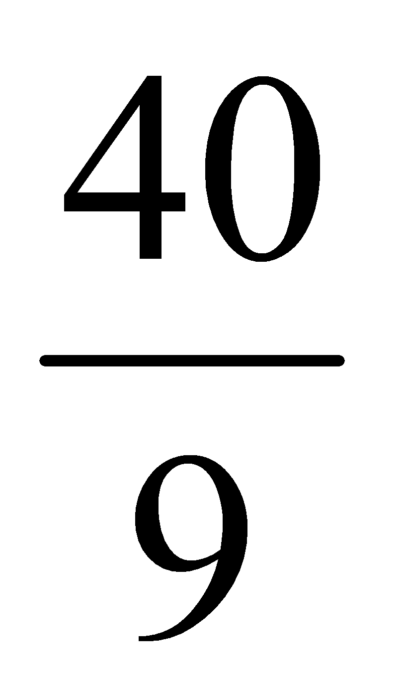
天完成．【分析】本题考查了一元一次方程的应用．
设还需要 天完成，根据工作量关系列方程求解．
天完成，根据工作量关系列方程求解．
【详解】解：设还需要天完成，
甲的工作效率为 ，乙的工作效率为
，乙的工作效率为 ，丙的工作效率为
，丙的工作效率为 ，
，
根据题意，得
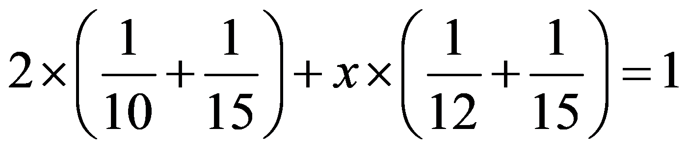
，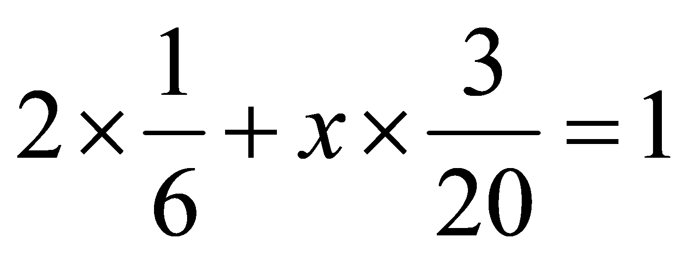
，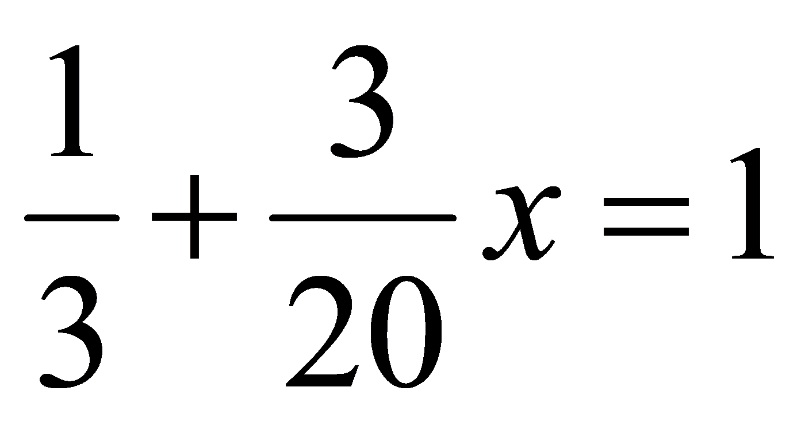
，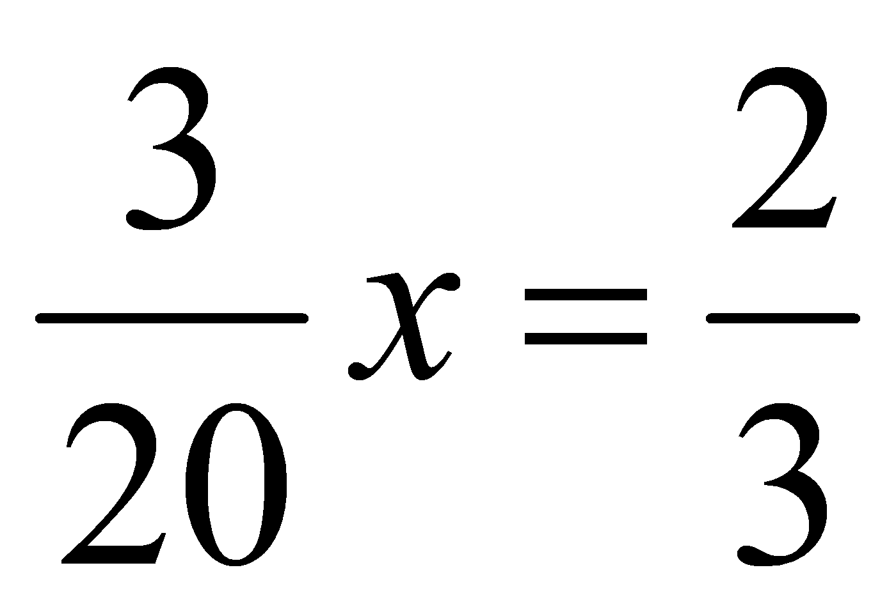
，解得
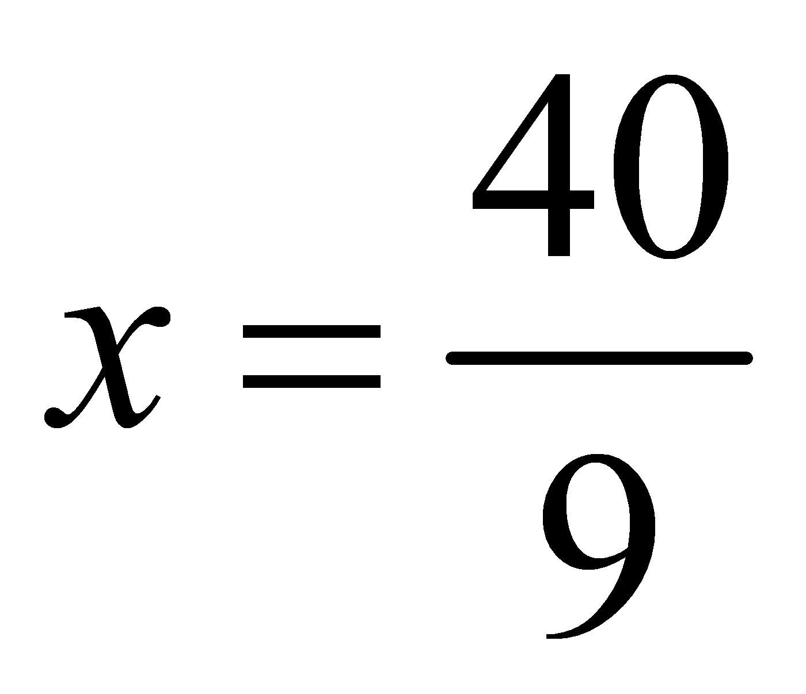
．答：还需天完成．
2．甲组的4名工人3月份完成的总工作量比此月人均定额的4倍多20件，乙组的5名工人3月份完成的总工作量比此月人均定额的6倍少20件．如果甲组工人此月人均实际完成的工作量比乙组的少2件，那么此月人均定额是多少件？
【答案】55
【分析】本题主要考查一元一次方程的应用，解此题的关键在于根据题意设出未知数，找到题中相等关系列出方程，然后求解即可.
设此月人均定额为x件，甲组人均工作量为
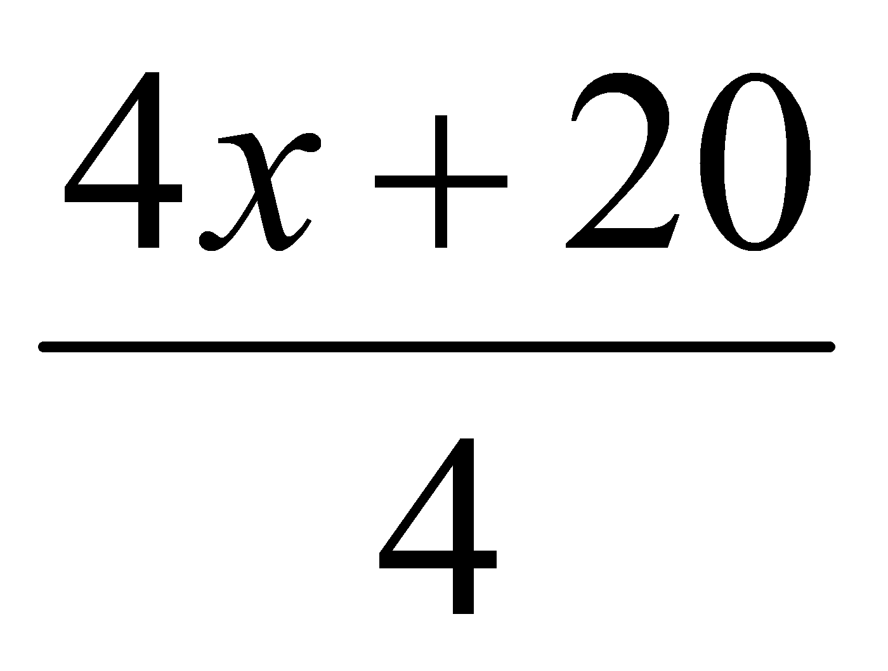
，乙组人均工作量为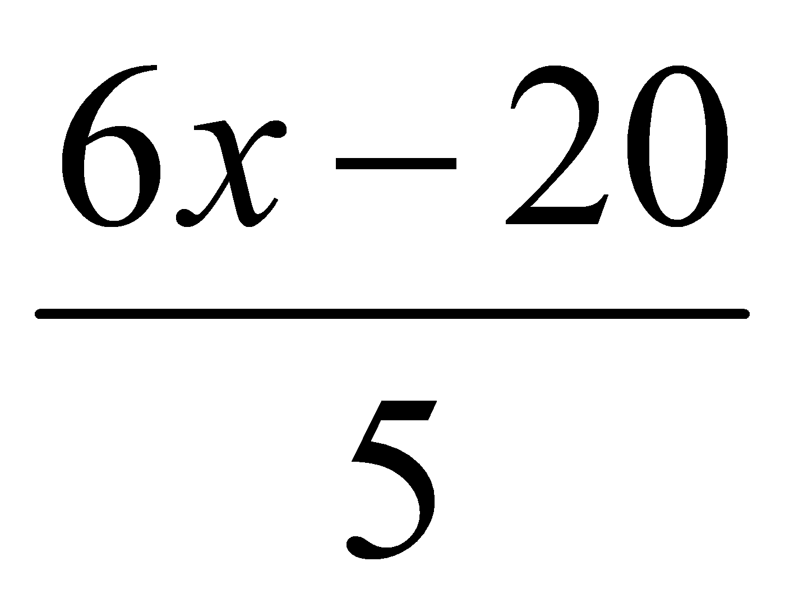
，根据甲组工人此月人均实际完成的工作量比乙组的少2件得到关于x的一元一次方程，然后求解方程即可.【详解】解：设此月人均定额为x件，
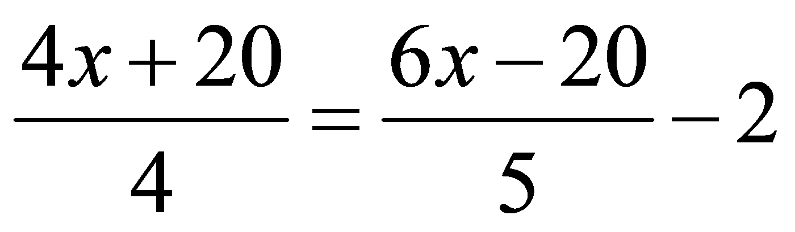
解得：
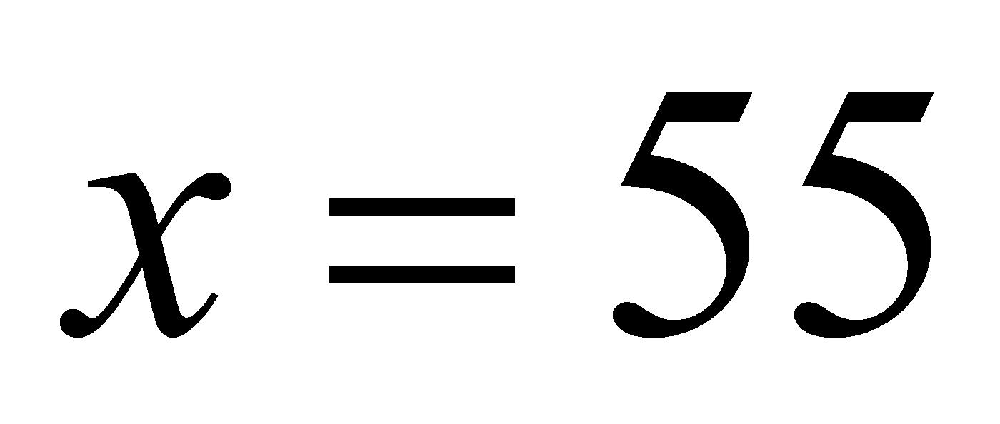
．答：此月人均定额是
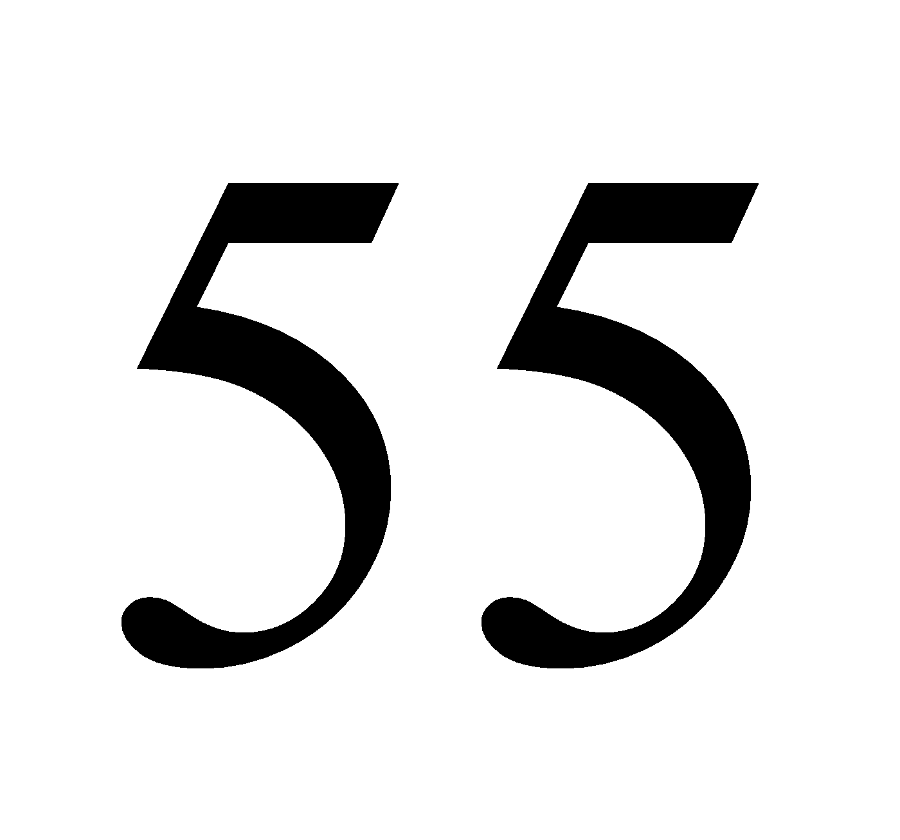
件．3．已知某水池有甲、乙两个进水管．单独开放甲管，
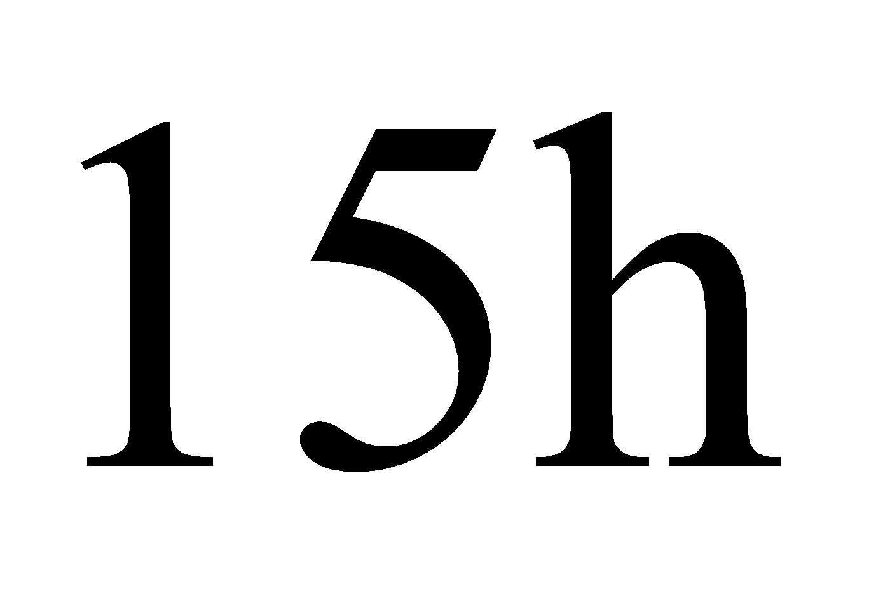
可以将空水池注满；单独开放乙管， 可以将空水池注满．如果先打开甲管对空水池注水
可以将空水池注满．如果先打开甲管对空水池注水 ，再打开乙管同时注水，那么注满水池还需多少小时？
，再打开乙管同时注水，那么注满水池还需多少小时？【答案】8小时
【分析】此题考查了列一元一次方程解应用题，解题的关键是审题，找到题目中的数量关系．
设水池总容量为1，甲管注水速率为每小时，乙管注水速率为
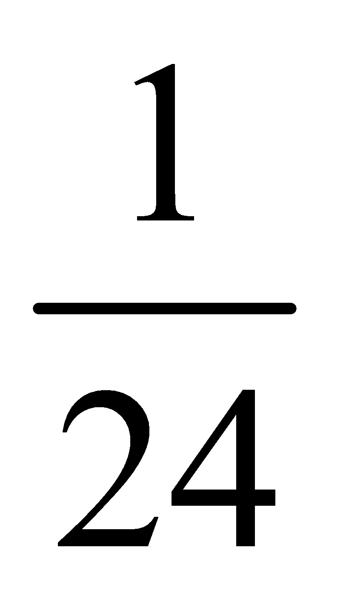
每小时，设注满剩余水池还需 小时，根据题意列出方程求解即可．
小时，根据题意列出方程求解即可．【详解】解：设水池总容量为1，
甲管注水速率为每小时，乙管注水速率为每小时，
设注满剩余水池还需小时，
则
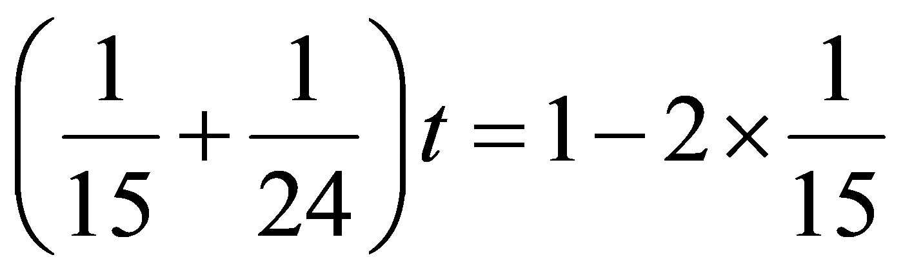
，解得： ，
，
答：注满水池还需8小时．
4．在繁忙的都市生活中，地铁作为城市交通的重要组成部分，承载着无数人的日常出行需求．某线路地铁进行修建，修建后产生的建筑垃圾需要清理．现计划租用甲、乙两车队清理建筑垃圾，已知甲车队单独运完需要9天，乙车队单独运完需要12天．乙车队先运了5天，然后甲、乙两车队共同合作运完剩下的垃圾．（列方程解决下列问题）
(1)甲、乙两车队共同合作了多少天？
(2)已知甲车队每天的租金比乙车队多80元，运完垃圾后需支付甲、乙两车队租金共5740元，求乙车队每天的租金．
【答案】(1)甲、乙两车队共同合作了3天
(2)乙车队每天的租金是500元
【分析】本题主要考查了一元一次方程的实际应用，根据题意找出等量关系并列出方程是解题关键；
（1）根据题意首先可以得知甲车效率为每天运送 ，乙车效率为每天运送，据此设甲、乙两车合作还需要天运完垃圾，然后进一步列出方程求解即可；
，乙车效率为每天运送，据此设甲、乙两车合作还需要天运完垃圾，然后进一步列出方程求解即可；
（2）设乙车每天租金为y元，则甲车每天租金为
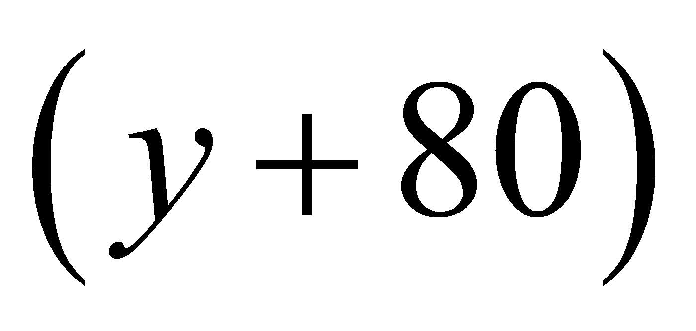
元，据此根据“共需支付租金5740元”列出方程求解即可.；【详解】（1）解：设甲、乙两车队共同合作了天，
由题意可得：
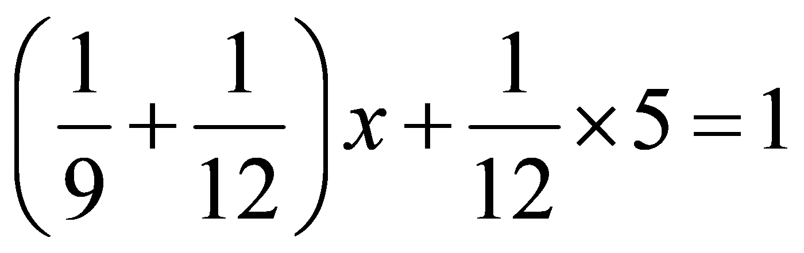
，解得： ．
．
答：甲、乙两车队共同合作了3天．
（2）解：设乙车队每天的租金是 元，则甲车队每天的租金是元，由题意可得：
元，则甲车队每天的租金是元，由题意可得：
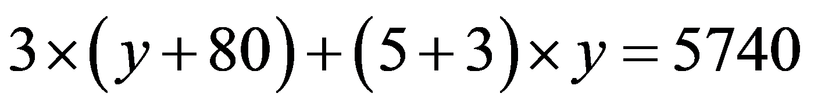
，解得：
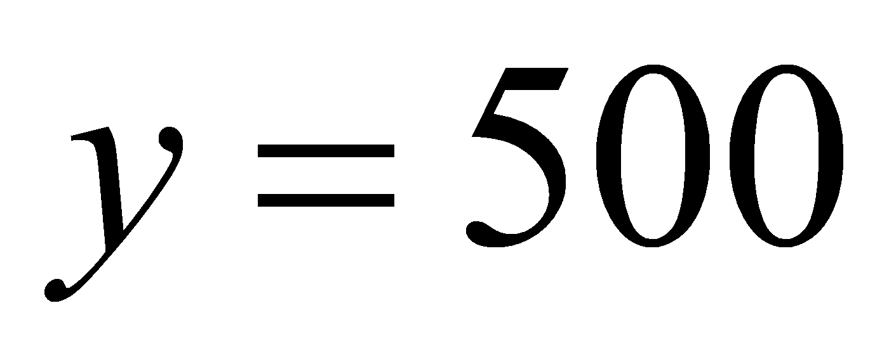
．答：乙车队每天的租金是500元．
5．列方程解应用题:某隧道及连接道路工程项目全长500米，其中隧道(地下路段)长度220米，剩余为连接道路（地上路段）．现有甲、乙两个工程队负责工程项目的修建，已知乙工程队每天修建地上路段的长度是甲工程队每天修建地上路段长度的 倍，一期工程甲、乙两工程队一起修建完280米长的地上路段，用时共4天．
倍，一期工程甲、乙两工程队一起修建完280米长的地上路段，用时共4天．
(1)求一期工程中甲、乙两工程队每天分别修建地上道路多少米?
(2)工程二期，由甲、乙两工程队继续负责地下路段的建设，由于建设难度的提升，甲、乙两工程队每天可修建地下道路长度缩减为一期工程的一半．工程二期，甲工程队每天修建道路的费用为3万元，乙工程队每天修建道路的费用为9万元．若安排由甲、乙共同修建该地下路段的一部分，剩下部分由甲工程队单独完成，工程二期总费用为72万元，求甲工程队在工程二期道路建设中单独修建了多少天?
【答案】(1)甲工程队每天修建20米，乙工程队每天修建50米
(2)甲工程队在工程二期道路建设中单独修建了8天
【分析】本题考查一元一次方程的应用，理解题意，找出等量关系，列出方程是解题的关键．
（1）由题意得，设甲工程队每天修建地上道路x米，则乙工程队每天修建
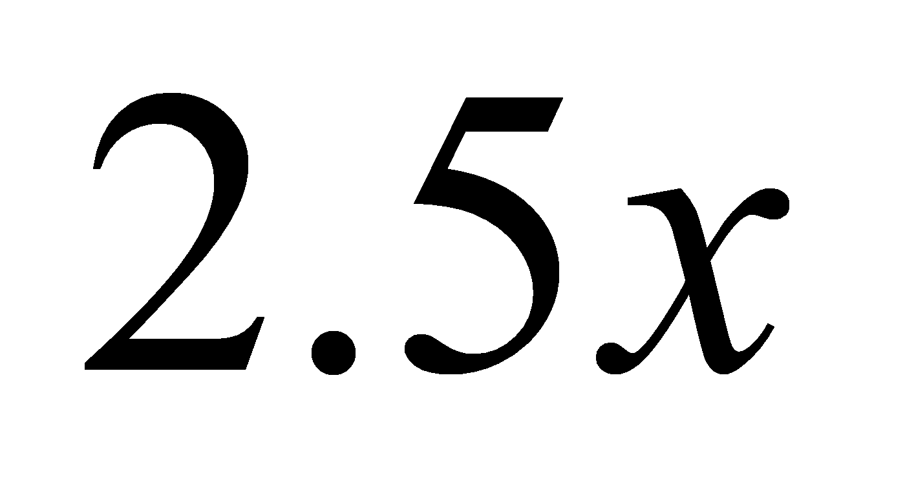
米，根据甲、乙两工程队一起修建完280米长的地上路段，用时共4天，列方程求解即可；（2）设甲工程队单独修建了y天，则甲单独修建的费用为 万元，甲乙共同修建的费用为
万元，甲乙共同修建的费用为
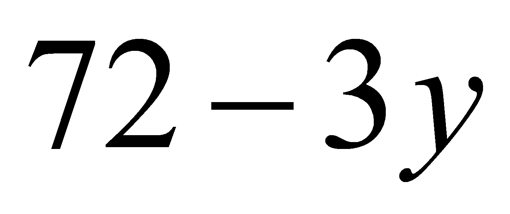
万元，甲乙每天共同费用为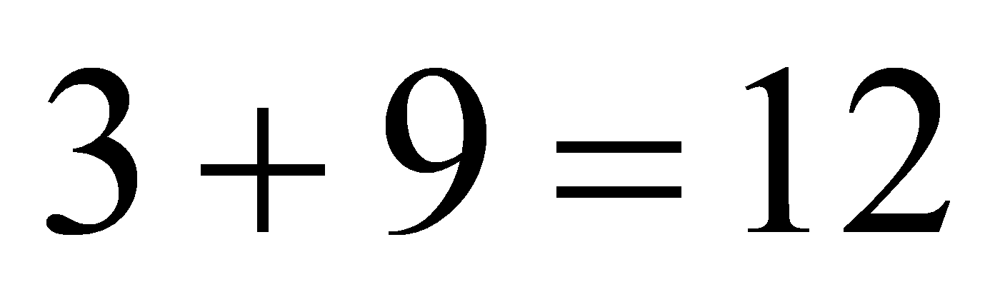
万元，进而可求出共同修建的天数为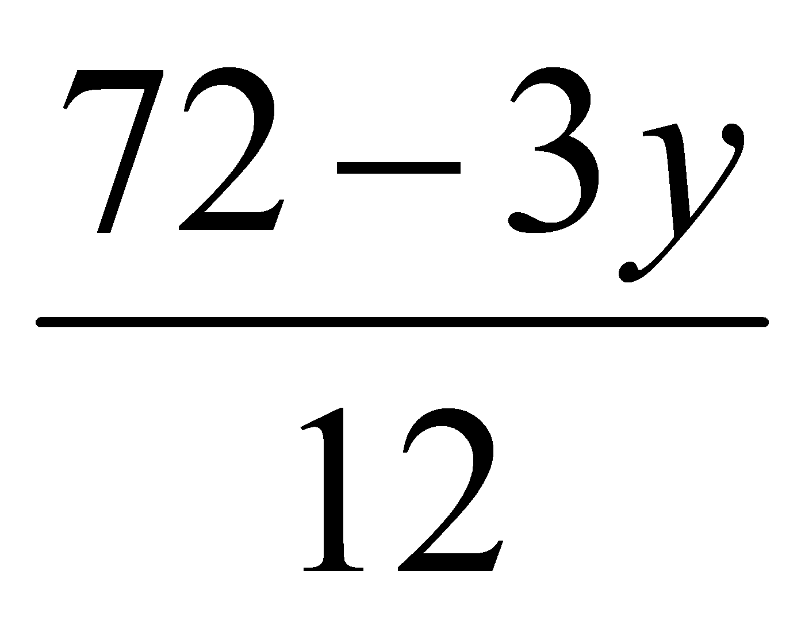
天，再根据“地下路段总长220米”列方程求解即可．【详解】（1）解：设甲工程队每天修建地上道路x米，则乙工程队每天修建米，
由题意得，
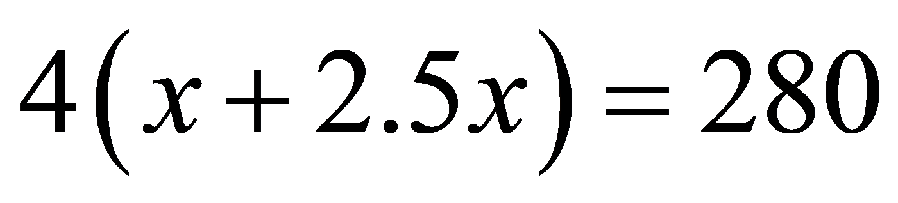
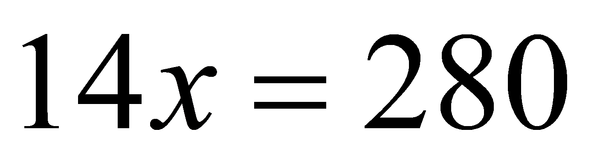
解得 ，
，
∴乙每天修建：
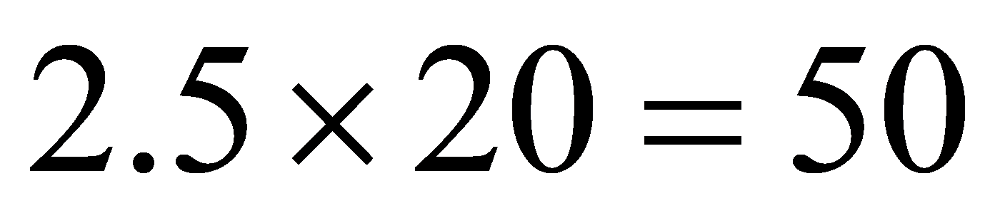
米，答：甲工程队每天修建20米，乙工程队每天修建50米；
（2）解：∵工程二期，甲、乙每天修建地下道路的长度为一期的一半，
∴甲每天修地下道路：
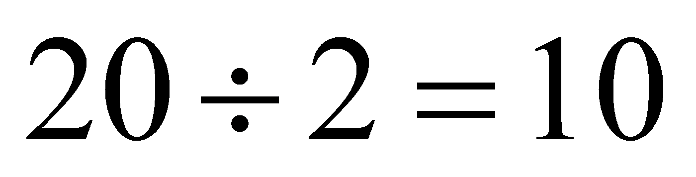
米；乙每天修地下道路：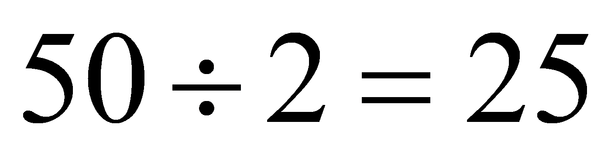
米，设甲工程队单独修建了y天，
∴甲单独修建的费用：万元，甲乙共同修建的费用：万元，甲乙每天共同费用为万元，
∴共同修建的天数为天，
∵“地下路段总长220米”，
∴
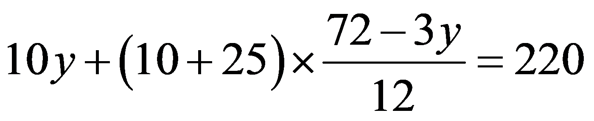
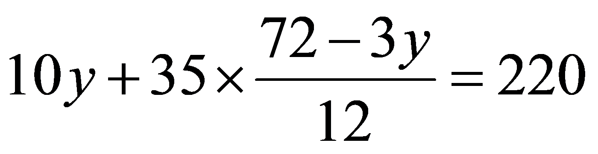
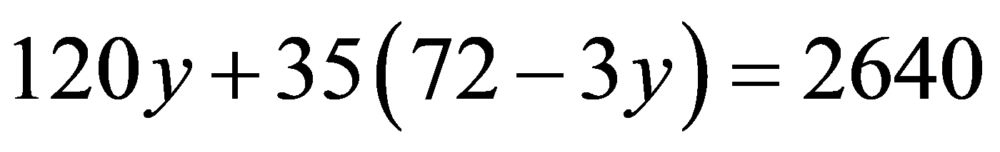
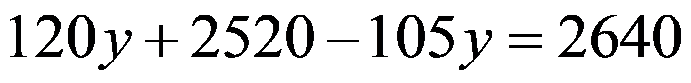
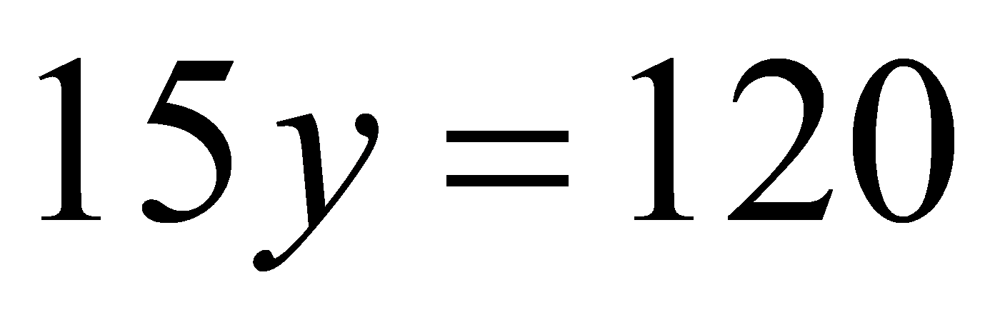
解得 ．
．
答：甲工程队在工程二期道路建设中单独修建了8天．
6．“告别百年隐患，守护城市安全”初冬的哈尔滨中央大街，地下管网改造一片繁忙．现有甲乙两个工程队，需要对一小区进行改造，甲工程队单独完成这一项工程需要20天，乙工程队单独完成这项工程所需的时间比甲工程队多 ．
．
(1)求乙队单独完成这项工程需要多少天？
(2)现在若甲工程队先做5天，剩余部分再由甲乙两队合作，还需要多少天才能完成？
(3)原计划由乙工程队单独完成这项工程，乙工程队工作几天后接到通知要缩短工期，后期工程由甲、乙两工程队合作完成，若甲工程队工作的总天数是乙工程队工作的总天数的 ，乙工程队每天施工费是甲工程队每天施工费的，最后甲、乙两队施工费共计7万元，求甲、乙工程队每天施工费多少万元？
，乙工程队每天施工费是甲工程队每天施工费的，最后甲、乙两队施工费共计7万元，求甲、乙工程队每天施工费多少万元？
【答案】(1)30天
(2)9天
(3)甲队0.4万元，乙队0.2万元
【分析】本题考查一元一次方程的实际应用，找准等量关系，正确的列出方程是解题的关键：
（1）根据乙工程队单独完成这项工程所需的时间比甲工程队多，列式计算即可；
（2）设还需要天完成，根据总量等于各劳动分量之和，列出方程进行求解即可；
（3）设乙工程队工作的天数为天，则甲工程队工作的天数为
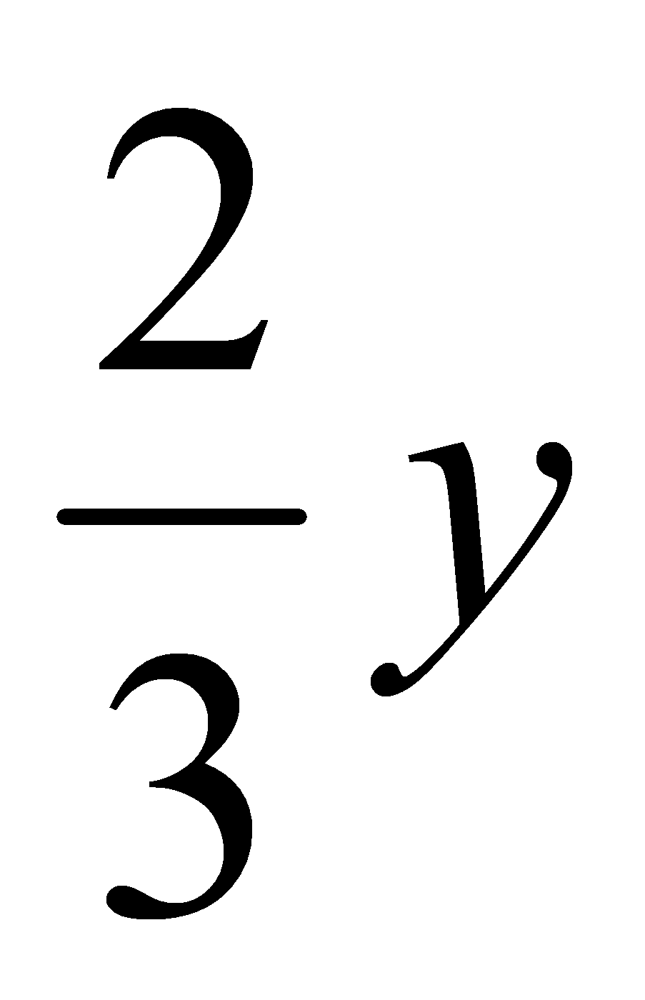
天，列出方程求出每个工程队的施工天数，再设甲工程队每天施工费为 万元，根据甲、乙两队施工费共计7万元，列出方程进行求解即可．
万元，根据甲、乙两队施工费共计7万元，列出方程进行求解即可．【详解】（1）解：根据题意可得：
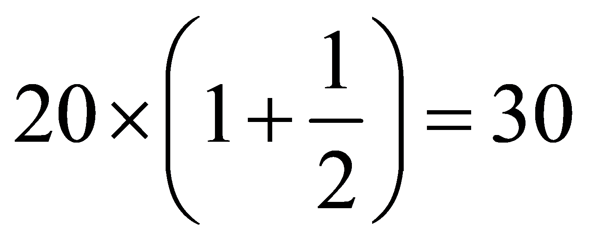
（天），答：乙队单独完成这项工程需要30天．
（2）解：设还需要天完成，依题意，得：
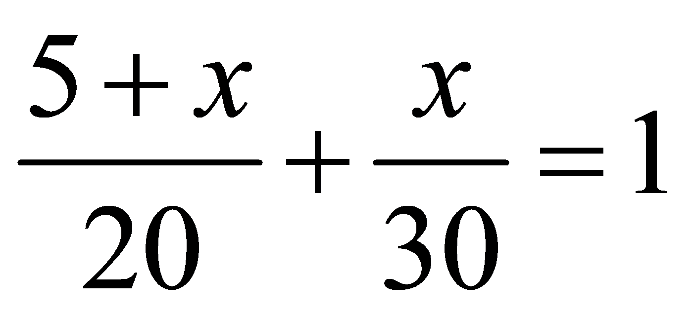
，解得： ，
，
答：还需要9天才能完成；
（3）解：设乙工程队工作的天数为天，则甲工程队工作的天数为天，
依题意，得：
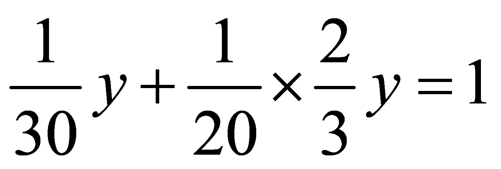
，解得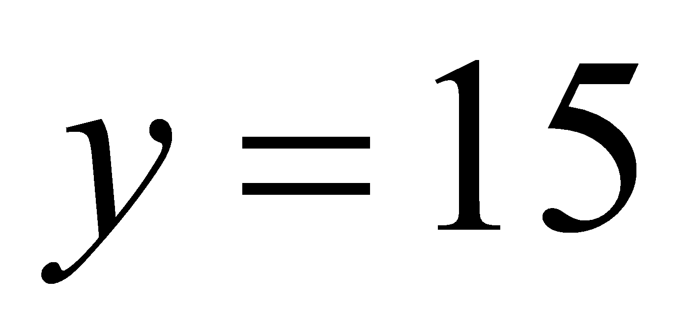
，所以
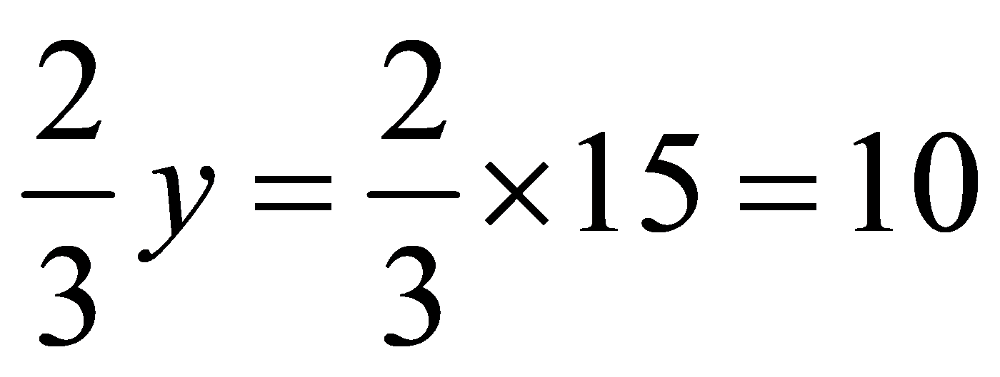
，设甲工程队每天施工费为万元，则乙工程队每天施工费为
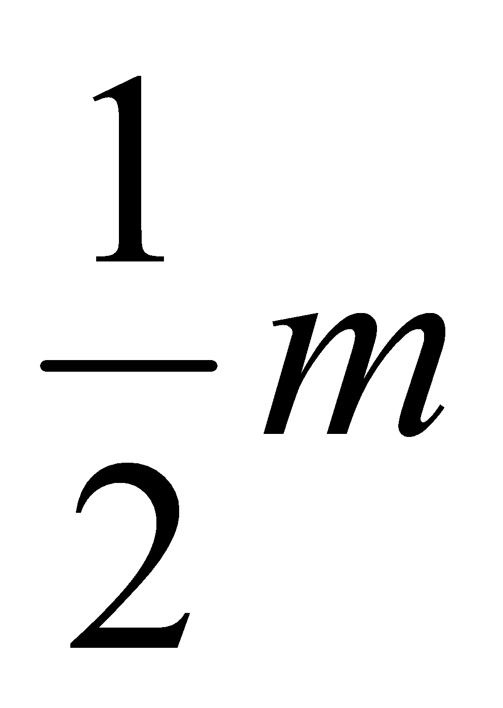
万元，依题意，得：
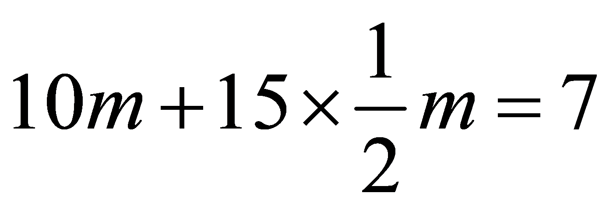
，解得：
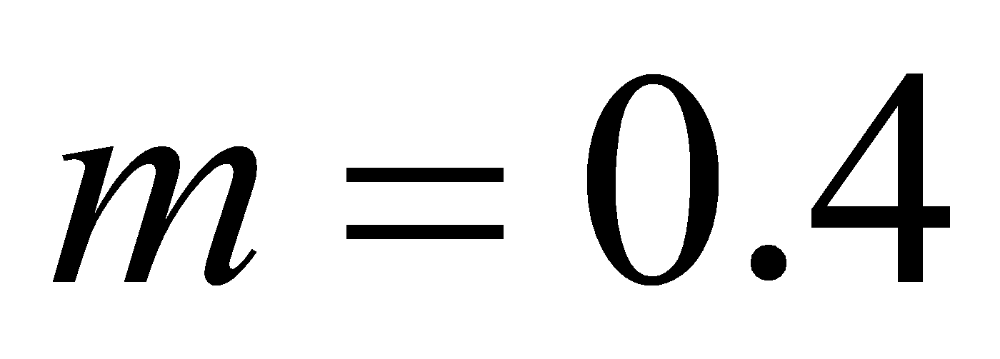
，所以
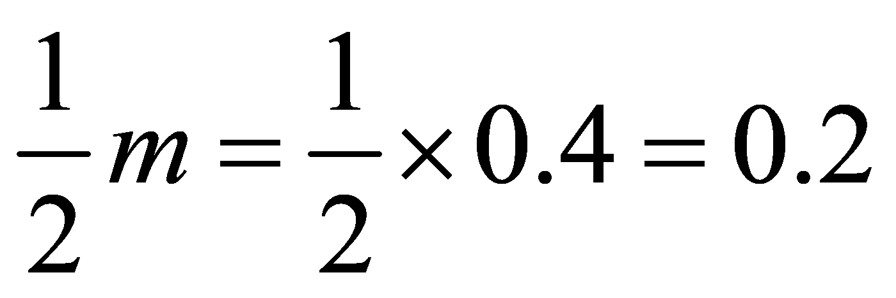
．答：甲队每天的施工费为0.4万元，乙队每天的施工费为0.2万元．
7．某中学有甲、乙两台印刷机，学校期末考试所需数学试卷如果用甲、乙两台印刷机单独印刷分别需要1小时和 小时，为了保密，学校决定在考试前的一小时开始印刷数学试卷．
小时，为了保密，学校决定在考试前的一小时开始印刷数学试卷．
(1)若甲、乙两台印刷机同时印刷，共需要多少小时才能印完？（要求列方程解答）
(2)在两台印刷机同时印刷半小时后，甲印刷机出现故障停止印刷，此时离发卷还有 分钟．请你计算一下，如果乙印刷机单独完成剩下的印刷任务，会不会影响按时发卷？
分钟．请你计算一下，如果乙印刷机单独完成剩下的印刷任务，会不会影响按时发卷？
【答案】(1)0.6小时
(2)不会影响按时发卷
【分析】本题考查一元一次方程的应用，解题的关键是明确题意，找出所求问题需要的条件．
（1）根据题意可以列出相应的方程，从而可以解答本题；
（2）根据题意可以求出乙机单独完成剩下的印刷任务需要的时间，然后再与比较，即可解答本题．
【详解】（1）解：设甲乙两台印刷机同时印刷，共需要x小时才能印完，
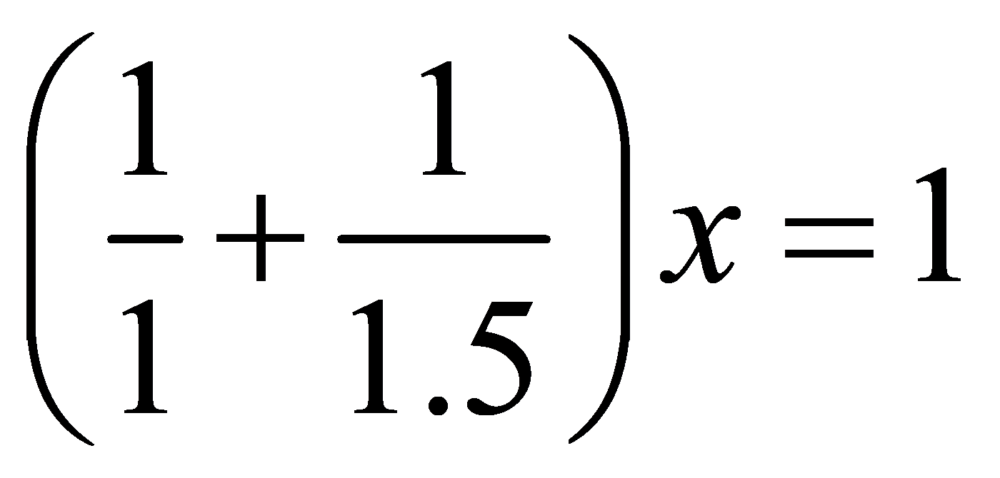
，解得，
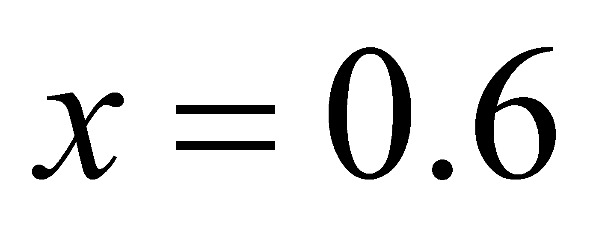
，即甲乙两台印刷机同时印刷，共需要 小时才能印完；
小时才能印完；
（2）解：乙机单独完成剩下的印刷任务需要的时间为：
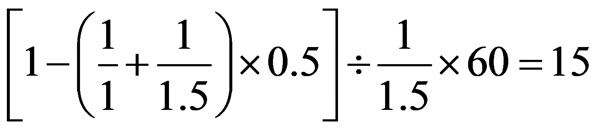
，∵
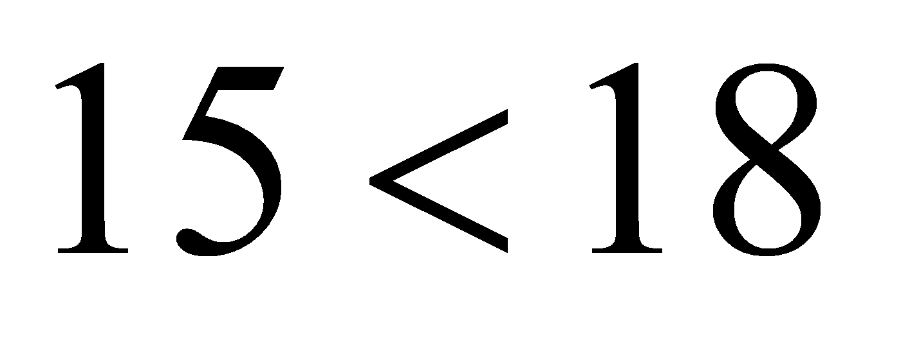
，∴乙机单独完成剩下的印刷任务，不会影响按时发卷考试．
8．一项工程，如果甲队单独完成需要12天，乙队单独完成所需的时间比甲队多．
(1)求乙队单独完成这项工程需要多少天？
(2)现在若甲队先做7天，剩余部分再由甲乙两队合作，求完成这项工程需要多少天？
(3)原计划由乙队单独完成这项工程，乙队工作几天后接到通知要缩短工期，后期工程由甲、乙两队合作完成．若甲队工作的天数是乙队工作天数的，乙队单独施工一天需工程款0.2万元，乙队每天工程款比甲队每天工程款的少0.01万元，求完成这项工程共需支付多少元工程款？（注：甲、乙两队施工过程中工作效率始终不变）
【答案】(1)18天
(2)10天
(3)4.32万元
【分析】本题考查了一元一次方程的应用以及有理数的混合运算．
（1）由乙工程队单独完成这项工程所需的时间比甲工程队多，可求出乙队单独完成这项工程所需的天数；
（2）设完成这项工程需要x天，根据甲工程队完成的工程量 乙工程队完成的工程量
乙工程队完成的工程量 总工程量，即可得出关于x的一元一次方程，解之即可得出结论；
总工程量，即可得出关于x的一元一次方程，解之即可得出结论；
（3）设乙工程队工作的天数为y天，则甲工程队工作的天数为，根据甲工程队完成的工程量+乙工程队完成的工程量=总工程量，即可得出关于y的一元一次方程，解之即可得出y的值，设甲工程队每天施工费为m万元，则乙工程队每天施工费为
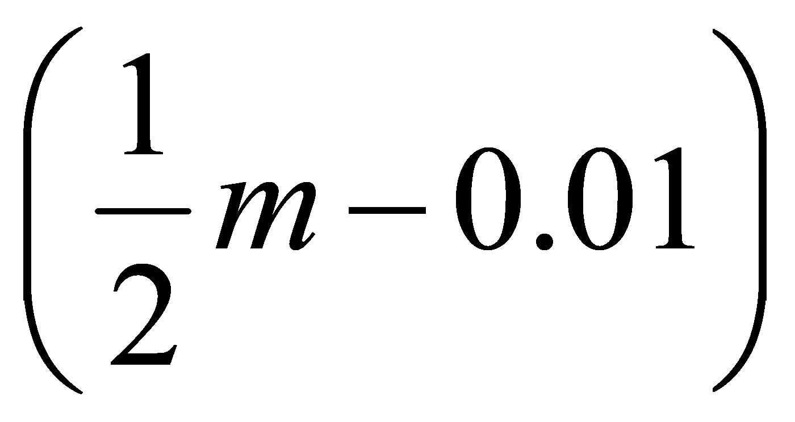
万元，根据乙队单独施工一天需工程款0.2万元，即可得出关于m的一元一次方程，解之即可得出结论．【详解】（1）解：根据题意可得：
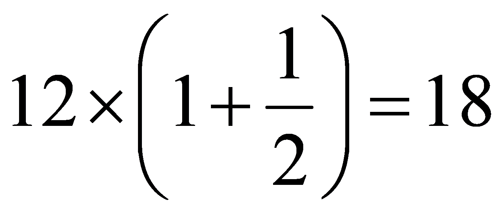
（天），所以乙队单独完成这项工程需要18天．（2）解：设完成这项工程需要x天，
依题意，得：
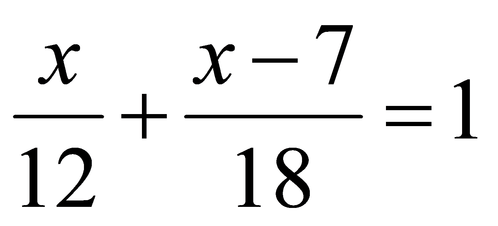
，解得： ，
，
答：完成这项工程需要10天．
（3）解：设乙工程队工作的天数为y天，则甲工程队工作的天数为天，
依题意，得：
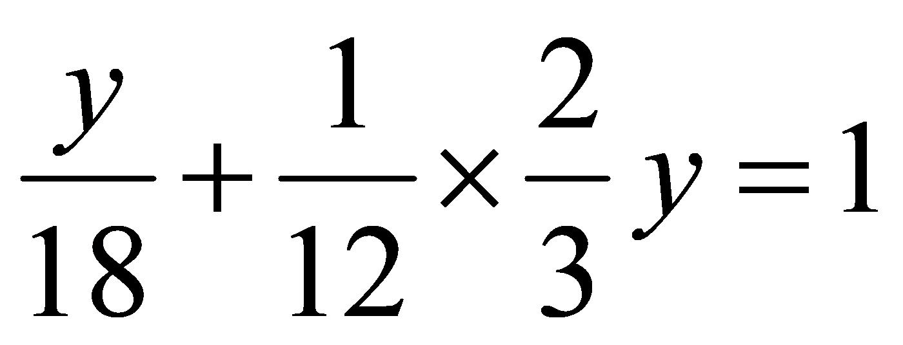
，解得，所以，
设甲工程队每天施工费为m万元，则乙工程队每天施工费为万元，
依题意，得：，
解得：，
∴完成这项工程共需支付工程款（万元）．
考点02 行程问题
9．某中学学生步行到郊外旅行，七年级（1）班学生组成前队，步行速度为 ，七年级（2）班的学生组成后队，速度为．前队出发后，后队才出发，后队追上前队需要多长时间？
，七年级（2）班的学生组成后队，速度为．前队出发后，后队才出发，后队追上前队需要多长时间？
【答案】
【分析】本题考查一元一次方程的应用，解题的关键是明确题意，找出等量关系，列出相应的方程．
由题意可知两队相差的距离为4千米，设后队追上前队需要 ，列方程即可解答．
，列方程即可解答．
【详解】解：设后队追上前队需要，
由题意，得，
解得 ，
，
所以后队追上前队需要．
10．已知A、B两城相距120公里，甲、乙、丙三人从A城出发去往B城，甲骑车速度为15公里/小时，乙、丙的步行速度都为5公里/小时．
(1)乙和丙要比甲提前多久步行出发，才能三人同时到达B城？
(2)甲、乙、丙同时从 城出发，丙步行，甲骑车带乙行至D处，乙下车向B城步行，甲骑车返回迎接丙，在C点与丙相遇，再带丙到B城，结果三人同时到B城，问乙步行了多少公里？
城出发，丙步行，甲骑车带乙行至D处，乙下车向B城步行，甲骑车返回迎接丙，在C点与丙相遇，再带丙到B城，结果三人同时到B城，问乙步行了多少公里？
【答案】(1)16小时
(2)40公里
【分析】本题考查了方程的应用，比的应用，理解题意正确列出方程是解题的关键．
（1）根据题意，列出时间差的算式求解即可；
（2）设甲骑车带乙到D处所行驶的时间为t小时，此时甲乙行驶了公里，表示出相关线段的长度以及每人行驶的时间，然后根据时间相等列出方程求解即可．
【详解】（1）解：（小时）
∴乙和丙要比甲提前16小时步行出发；
（2）解：设甲骑车带乙到D处所行驶的时间为t小时，此时甲乙行驶了公里，
则乙应步行的距离为公里，到达B城需要的时间为小时；
由于甲丙的速度比为，t小时丙行驶了公里，甲丙间相距公里，甲骑车返回迎接丙，在C点与丙相遇，由相遇时甲丙路程的比等于速度的比，甲行驶的路程是丙行驶的路程的3倍，则丙行驶的路程为公里，
所以丙从出发到C点一共行驶的路程为公里，行驶的时间为小时，剩下的路程为甲丙骑车的路程公里，需要的时间为小时；
由于三人同时到达终点B城，则，
解得：，
则乙步行的路程为（公里）；
答：乙步行的路程为40公里．
11．甲、乙两人骑自行车，同时从相距 的两地相向而行，甲的速度为
的两地相向而行，甲的速度为 ，乙的速度为
，乙的速度为 ，他们出发后多长时间相遇？
，他们出发后多长时间相遇？
小明的解答思路为：设他们出发后相遇，画出如下分析图．
列出的方程为．
(1)请结合图示解释小明所列方程两端各项的含义．
(2)请在学过的题目中选出两道具有“部分部分整体”这种等量关系的题目．
【答案】(1)见详解
(2)见详解（答案不唯一）
【分析】本题主要考查了由实际问题抽象出一元一次方程，关键在于理解题意，找出等量关系．
（1）根据题意得，表示二人相遇时甲骑行的路程，表示二人相遇时乙骑行的路程，14表示总路程；
（2）任选出两道具有这种等量关系的题目即可．
【详解】（1）解：表示二人相遇时甲骑行的路程，表示二人相遇时乙骑行的路程，方程左侧表示甲乙两人所走路程和，14表示总路程；
（2）解：题目1：小李、小王两人参加植树劳动，两人需栽种14棵树苗，小李每小时可种3棵，小王每小时可种4棵，他们需要多长时间可以完成？
题目2：文具厂要生产600套文具捐赠给山区学校，由甲、乙两组合作完成，甲组每天可生产70套，乙组每天可生产80套，两组需要多少天可以完成这项任务？
12．小李家和小刚家相距，两人同时从家出发，相向而行．
(1)如果小李每分钟走，小刚每分钟走 ，那么两人几分钟后相遇？
，那么两人几分钟后相遇？
(2)如果小李每分钟走， 后两人相遇，那么小刚每分钟走多少米？
后两人相遇，那么小刚每分钟走多少米？
【答案】(1)6
(2)120
【分析】此题考查了列一元一次方程解应用题，解题的关键是审题，找到题目中的数量关系．
（1）利用速度之和乘以时间等于总路程列方程求解．
（2）利用速度之和乘以时间等于总路程列方程求解．
【详解】（1）解：设相遇时间为分钟．
∵小李速度，小刚速度，相向而行，总路程，
∴，
解得： ，
，
答：两人6分钟后相遇．
（2）解：设小刚速度为．
∵小李速度，相遇时间，总路程，
∴，
解得：．
答：小刚每分钟走120米．
13．A，B两村之间的路程是 ．小明从A村出发向B村步行后，小军骑自行车沿同一条路从B村向A村出发，又经
．小明从A村出发向B村步行后，小军骑自行车沿同一条路从B村向A村出发，又经 两人相遇．小军骑自行车比小明步行每分钟多走
两人相遇．小军骑自行车比小明步行每分钟多走 ，那么小明每分钟步行多少米?
，那么小明每分钟步行多少米?
【答案】小明每分钟步行60米
【分析】本题考查了一元一次方程的应用，解题关键是要读懂题目的意思，根据题目给出的条件，找出合适的等量关系列出方程，再求解．可设小明每分钟步行米，根据等量关系：， 两村相距，列出方程求解即可．
两村相距，列出方程求解即可．
【详解】解：设小明每分钟步行米，依题意有
，
解得．
答：小明每分钟步行60米．
14．妈妈 从家出发步行去乘火车，
从家出发步行去乘火车， 时小明发现妈妈忘记带手机，立即骑车追赶，已知妈妈每分钟步行60米，小明每分钟骑行240米，如果火车站距家1800米，那么小明能在妈妈到达火车站前追上她吗？如果能，何时追上？如果不能请说明理由．
时小明发现妈妈忘记带手机，立即骑车追赶，已知妈妈每分钟步行60米，小明每分钟骑行240米，如果火车站距家1800米，那么小明能在妈妈到达火车站前追上她吗？如果能，何时追上？如果不能请说明理由．
【答案】能追上，在追上她
【分析】本题考查了一元一次方程的应用，理解题意，找出数量关系是解题关键．设小明出发分钟可以追上妈妈，根据题意列方程，求得小明出发 分钟可以追上妈妈，此时妈妈步行了分钟，再根据妈妈步行到火车站需要30分钟，即可得出答案．
分钟可以追上妈妈，此时妈妈步行了分钟，再根据妈妈步行到火车站需要30分钟，即可得出答案．
【详解】解：设小明出发分钟可以追上妈妈，
由题意得：，
解得： ，
，
即小明出发分钟可以追上妈妈，
此时妈妈步行了分钟，
分钟，即妈妈步行到火车站需要30分钟，
因为20分钟 30分钟，
30分钟，
所以小明能在妈妈到达火车站前追上她，且在追上她．
15．甲、乙两船从同一港口同时出发反向而行，甲船顺水，乙船逆水，两船在静水中的速度都是 千米/时，水流速度是
千米/时，水流速度是 千米/时．（顺水速度静水速度水流速度，逆水速度静水速度
千米/时．（顺水速度静水速度水流速度，逆水速度静水速度 水流速度）
水流速度）
(1)用含的代数式表示甲船顺水速度和乙船逆水速度；
(2)用含的代数式表示 小时后甲船比乙船多航行的路程；（结果化为最简）
小时后甲船比乙船多航行的路程；（结果化为最简）
(3)若小时后甲船比乙船多航行 千米，求的值．
千米，求的值．
【答案】(1)甲船顺水速度：，乙船逆水速度：
(2)
(3)
【分析】本题考查了列代数式，一元一次方程的应用，整式的加减运算．正确列出代数式是解题的关键．
（1）直接根据公式写出代数式，即可；
（2）先计算小时后两船的路程，在求差，即可求解；
（3）根据路程差为60千米列方程求解即可．
【详解】（1）解：甲船顺水速度静水速度水流速度；
乙船逆水速度静水速度水流速度．
（2）解：小时后甲船航行路程：，即使
小时后乙船航行路程：，
甲船比乙船多航行的路程：．
（3）解：∵甲船比乙船多航行千米，
故，
解得．
16．小明以每小时3千米的速度登山，走到途中A点，他将速度降为每小时2千米，在接下来的1小时中，他走到山顶，又立即下山，并走到A点上方200米的地方，如果他下山的速度是每小时4千米，下山比上山少用了 42 分钟，那么，他往返共走了多少千米？
【答案】11.2千米
【分析】本题考查了行程问题，一元一次方程的应用，解题的关键是正确理解题意，建立方程求解．
由题意得，设速度降为每小时2千米后的1小时中，上山时间为x小时，则下山为小时，则，求出，由题意可得下山路程与A点以下路程之比为，则A点以上距离是下山距离的 ，然后即可求出往返共走的路程．
，然后即可求出往返共走的路程．
【详解】解：由题意得，设速度降为每小时2千米后的1小时中，上山时间为x小时，则下山为小时，
所以可列方程：，
解得，0.7小时 分钟，
由题意得以每小时4千米的下山时间与以每小时3千米的上山时间相等
所以下山路程与A点以下路程之比为，
所以A点以上距离是下山距离的 ，
，
所以往返一共走了：（千米）
答：他往返共走了11.2千米．
考点03 销售问题
17．某文具店购进一批笔记本，进价为每本8元．
(1)若按标价的9折销售，每本可获利2元，求每本笔记本的标价；
(2)在（1）的条件下，若该店按标价售出 本，按9折售出
本，按9折售出 本，按8折售出本，求该店共获利多少元？
本，按8折售出本，求该店共获利多少元？
【答案】(1)元
(2)元
【分析】本题考查一元一次方程的应用，有理数的混合运算，掌握相关知识是解决问题的关键．
（1）设标价为 元，根据打折后的售价与进价、利润的关系列方程求解；
（2）根据不同售价的销售量分别计算利润，再求和．
【详解】（1）解：设每本笔记本的标价为 元．
，
答：每本笔记本的标价为 元；
（2）解：由（1）知标价为 元，
按标价售出  本，每本利润为 （元），
本，每本利润为 （元），
利润为 （元）；
按 9 折售出 200 本，每本利润为 2 元，
利润为 （元）；
按 8 折售出 100 本，售价为 （元），
每本利润为 （元），
利润为 （元）；
总利润为 （元）．
答：该店共获利 800 元．
18．列一元一次方程解决实际问题：
魔方和数独棋等益智玩具近年来深受青少年的喜爱，它们不仅能给人带来乐趣，还能有效锻炼人的逻辑思维和问题解决能力．为了满足市场需求，某商店决定用元购进魔方、数独棋这两种益智玩具进行销售，其中购进魔方的数量是数独棋数量的 倍，魔方、数独棋的进价和标价如下表：
倍，魔方、数独棋的进价和标价如下表：
魔方 | 数独棋 | |
进价（元个） |
|
|
标价（元个） |
|


(1)该商店购进魔方、数独棋各多少个？
(2)如果魔方按标价的七折出售，数独棋按标价的八折出售，那么这两种益智玩具全部售完后，该商店共获利多少元？
【答案】(1)该商店购进魔方 个，数独棋个；
个，数独棋个；
(2)该商店共获利元．
【分析】本题考查了一元一次方程的应用，有理数运算的应用，掌握知识点的应用是解题的关键．
（ ）设数独棋个，则商店购进魔方
）设数独棋个，则商店购进魔方 个，根据题意得，然后解方程即可；
个，根据题意得，然后解方程即可；
（）由题意得，商店共获利，然后通过运算法则即可求解．
【详解】（1）解：设数独棋个，则商店购进魔方个，
根据题意得，
解得： ，
，
∴商店购进魔方，
答：该商店购进魔方个，数独棋个；
（2）解：由题意得，商店共获利，
（元），
答：该商店共获利元．
19．某商场销售A，B两种品牌的营养早餐牛奶，其中A品牌牛奶的售价为50元/箱，B品牌牛奶的售价为70元/箱．某校决定在该商场购进A，B两种品牌牛奶共100．箱，恰逢商场对两种品牌牛奶的售价进行调整：A品牌牛奶每箱的售价比原售价减少了5元，B品牌牛奶每箱按原售价的八折出售．设学校购进A品牌牛奶x箱．
(1)请直接在表格中填写结果：
品牌 | 购买价格/（元/箱） | 购买量/箱 | 购买总价/元 |
A | 45 |
|
|
B | ______ | ______ |

(2)如果该校此次购买A，B两种品牌牛奶的总费用为4940元，那么该校此次购买了多少箱A品牌牛奶和B品牌牛奶？
【答案】(1)见解析
(2)该校此次购买了箱品牌牛奶和40箱品牌牛奶
【分析】本题考查了有理数乘法的应用、列代数式、一元一次方程的应用，找准等量关系，正确建立方程是解题关键．
（1）根据品牌牛奶按原售价的八折出售可得品牌牛奶的购买价格，再利用购买价格乘以购买量可得购买总价；
（2）根据总费用为4940元建立关于的一元一次方程，解方程即可得．
【详解】（1）解：∵品牌牛奶的原售价为70元/箱，现按原售价的八折出售，
∴品牌牛奶的购买价格为（元/箱），
品牌牛奶的购买总价为元．
在表格中填写结果如下：
品牌 | 购买价格/（元/箱） | 购买量/箱 | 购买总价/元 |
| 45 |
|
|
|
（2）解：由题意得：，
解得，
∴，
答：该校此次购买了箱品牌牛奶和40箱品牌牛奶．
20．我校开展校园艺术节系列活动，派小明到文体超市购买若干个文具袋作为奖品．这种文具袋标价每个 元，请认真阅读结账时老板与小明的对话．
元，请认真阅读结账时老板与小明的对话．
老板 | 如果你再多买一个，就可以打八五折，花费比现在还省 |
小明 | 那就多买一个吧，谢谢！ |
(1)结合两人的对话内容，求小明原计划购买文具袋多少个？
(2)学校决定，再次购买钢笔和签字笔共支作为补充奖品，其中钢笔标价每支8元，签字笔标价每支6元，经过沟通，这次老板给予8折优惠，合计 元，那么小明购买钢笔多少支？
元，那么小明购买钢笔多少支？
【答案】(1)小明原计划购买文具袋 个
个
(2)小明购买钢笔 支
支
【分析】本题主要考查了一元一次方程的实际应用，正确理解题意列出方程求解是解题的关键．
（1）设小明原计划购买文具袋x个，则原计划的费用为元，实际费用为元，根据实际比原计划节省元建立方程求解即可；
（2）设小明购买钢笔m支，则购买签字笔 支，根据打八折后的总费用为元建立方程求解即可．
支，根据打八折后的总费用为元建立方程求解即可．
【详解】（1）解：设小明原计划购买文具袋x个，
由题意得，，
解得，
答：小明原计划购买文具袋个；
（2）解：设小明购买钢笔m支，则购买签字笔支，
由题意得，，
解得 ，
，
答：小明购买钢笔支；
21．某水果店以5元/千克价格购进一批苹果，由于销售良好，该店又以 元/千克价格再次购进同一种苹果，这样该水果店两次购进苹果共600千克，花去2800元．
元/千克价格再次购进同一种苹果，这样该水果店两次购进苹果共600千克，花去2800元．
(1)求该水果店两次分别购买了多少千克苹果？
(2)在销售中，尽管两次进货的价格不同，但水果店仍以相同的价格售出，若第一次购进的苹果有 的损耗，第二次购进的水果有的损耗，并且在销售过程中的其他费用为392元，如果该水果店希望售完这些苹果共获得1400元的利润，那么该水果店每千克售价应定为多少元？
的损耗，第二次购进的水果有的损耗，并且在销售过程中的其他费用为392元，如果该水果店希望售完这些苹果共获得1400元的利润，那么该水果店每千克售价应定为多少元？
【答案】(1)第一次购买了200千克苹果，第二次购买了400千克苹果
(2)该水果店每千克售价应定为8元
【分析】本题主要考查了一元一次方程的实际应用，正确理解题意列出方程求解是解题的关键．
（1）设第一次购买了x千克苹果，则第二次购买了千克苹果，根据两次购买的总费用为2800元建立方程求解即可；
（2）设该水果店每千克售价应定为m元，根据利润等于总销售额减去总成本建立方程求解即可．
【详解】（1）解：设第一次购买了x千克苹果，则第二次购买了千克苹果，
由题意得，，
解得 ，
，
∴，
答：第一次购买了200千克苹果，第二次购买了400千克苹果；
（2）解：设该水果店每千克售价应定为m元，
由题意得，
解得，
答：该水果店每千克售价应定为8元．
22．某超市开展促销活动，一次性购物满200元后将给购物者优惠，购物超过200元不足500元的，按9折优惠；购物超过500元的，500元以下（含500元）仍按9折优惠，而超过500元的部分按8折优惠．某人第一次和第二次购物分别用了134元和490元，问：
(1)此人两次购物时．所购物品的原价是多少？
(2)在此次活动中他节省了多少钱？
(3)如果此人将两次购买的物品一次全部购买，是否更省钱？请说明你的理由．
【答案】(1)两次购物时，所购物品的原价分别为134元和550元
(2)节省了60元
(3)更省钱，理由见解析
【分析】本题考查了有理数的混合运算的应用，一元一次方程的应用，理解题意，正确列式计算是解此题的关键．
（1）此人第一次购物用了134元，没有享受优惠，即可得出所购买物品的原价为134元，由得出第二次所购物品超过500元，设第二次所购物品的原价为元，根据题意列出一元一次方程，解方程即可得解；
（2）将两次购买的原价相加减去实际付的钱即可得解；
（3）计算得出一次全部购买可以节省的钱，比较即可得解．
【详解】（1）解：此人第一次购物用了134元，没有享受优惠，即所购买物品的原价为134元，
第二次购物用了490元，
，
 所购物品超过500元．
所购物品超过500元．
设第二次所购物品的原价为元，
则，
解得 ．
．
答：此人两次购物时，所购物品的原价分别为134元和550元．
（2）解：（元）．
答：在此次活动中他节省了60元．
（3）解：更省钱．
如果一次全部购买可以节省（元），
因为，
所以，如果此人将两次购买的物品一次全部购买会更省钱．
23．国庆期间，某商场专柜进行优惠大酬宾活动，所有商品一律按照的利润定价，然后又打九折出售．（成本价 利润率利润，成本价利润定价，售价成本价利润）
利润率利润，成本价利润定价，售价成本价利润）
(1)商品A成本价是120元，商品A最后售价多少元？
(2)商品B卖出后，赚了68元，商品B的成本价是多少元？
【答案】(1)商品A最后应卖元；
(2)商品B的成本是850元
【分析】本题考查了一元一次方程的应用，解题的关键是：根据各数量之间的关系，列式计算，找准等量关系，正确列出一元一次方程．
（1）利用售价成本价利润率折扣率，即可求出结论；
（2）设商品B的成本是x元，利用售价成本价利润，可列出关于x的一元一次方程，解之即可得出结论．
【详解】（1）解：根据题意得：（元），
答：商品A最后应卖元；
（2）解：设商品B的成本是x元，
根据题意得：，
解得：，
答：商品B的成本是850元．
24．小华同学在A、B两家超市发现她看中的随身听的单价相同，书包单价也相同．随身听和书包单价之和是352元，且随身听的单价是书包单价的4倍少8元．
(1)求小华看中的随身听和书包的单价各是多少元？
(2)小华元旦那天上街，恰好赶上商家促销，超市A所有商品打八折销售，超市B全场购物满100元返购物券30元销售（不足100元不返券，购物券全场通用），但她只带了300元钱，她只想在一家超市购买看中的这两样物品，你能说明她可以选择在哪一家购买吗？若两家都可以选择，在哪一家购买更省钱？
【答案】(1)随身听和书包的单价分别为280元、72元
(2)两家都可以选择，在超市A购买更省钱
【分析】本题考查了一元一次方程的应用．
（1）设书包的单价为x元，则随身听的单价为元，根据“随身听和书包单价之和是352元”列方程求解即可；
（2）分别求出两家费用，可知两家都可以选择，进而比较大小即可．
【详解】（1）解：设书包的单价为x元，则随身听的单价为元，
依题意得：，
解得
（元）
答：随身听和书包的单价分别为280元、72元；
（2）解：在超市A购买随身听与书包需花费现金：（元），
因为，所以可以选择在超市A购买．
在超市B可先花费280元购买随身听，再利用得到的60元返还券，加上12元现金购买书包，总计共花费现金（元），
因为，所以也可以选择在超市B购买．
因为，所以在超市A购买更省钱．
考点04 得分问题
25．某校八年级组织数学竞赛，共有25道题，答对一题得4分，答错或不答扣1分．小明最终得分为75分．
(1)求小明答对了多少道题？
(2)若答对一题得5分，答错扣2分，不答不扣分，其他条件不变，求小明得分．
【答案】(1)小明答对了20道题
(2)90分或92分或94分或96分或98分或100分
【分析】本题主要考查了列一元一次方程解决实际问题，解题的关键是理解题意，列出方程．
（1）设答对道题，则答错或不答道题，根据得分法则列出方程求解即可；
（2）根据比赛规则列出算式进行求解即可．
【详解】（1）解：设答对道题，则答错或不答道题，
由题意：，
，
，
答：小明答对了20道题；
（2）解：答对20题，得分，
当答错0题，不答5题时，扣0分，总分为分；
当答错1题，不答4题时，扣分，总分为分；
当答错2题，不答3题时，扣 分，总分为分；
分，总分为分；
当答错3题，不答2题时，扣 分，总分为分；
分，总分为分；
当答错4题，不答1题时，扣 分，总分为
分，总分为 分；
分；
当答错5题，不答0题时，扣分，总分为分；
综上，小明得分为90分或92分或94分或96分或98分或100分．
26．某班组织元旦知识竞赛，共设有20道选择题，各题分值相同，每题必答．下表是，， 三位参赛者答完20道题后的得分情况．
三位参赛者答完20道题后的得分情况．
参赛者 | 答对题数 | 答错题数 | 得分 |
| 19 | 1 |
|
| 16 | 4 | 76 |
| 10 | 10 | 40 |
根据表中信息回答下列问题：
(1)设答对1道题得分，则答错1道题的得分为_______分（用含的式子表示）．
(2)求表格中的值．
(3)参赛者 已作答的一部分试题中，只答对了一半．如果他最多能得82分，他已作答了多少道题？
已作答的一部分试题中，只答对了一半．如果他最多能得82分，他已作答了多少道题？
【答案】(1)
(2)94
(3)他已作答了6道题
【分析】（1）从参赛者的得分可以求出答对一题和答错一题的得分和为 分，由此可以用含的式子表示答错一题的得分；
分，由此可以用含的式子表示答错一题的得分；
（2）从参赛者的得分入手，根据答对的得分+加上答错的得分=分建立方程求出其解，然后再求即可；
（3）设参赛者已作答了道题，根据参赛者已作答的一部分试题中，只答对了一半．如果他最多能得82分列方程计算即可．
【详解】（1）解：由参赛者的得分情况可知：答对一题和答错一题的得分和为：（分），
设答对1道题得分，则答错1道题的得分为分
 ．
．
（2）解：由参赛者的得分情况，得，
解得 ，则，
，则，
所以答对1道题得5分，答错1道题扣1分，
所以．
（3）解：设参赛者已作答了道题．
根据题意，得，解得 ．
．
故他已作答了6道题．
【点睛】本题考查了一元一次方程的应用，找准等量关系，正确列出一元一次方程是解题的关键．
27．某足球协会举办了一次足球比赛，其中得分规则及奖励方案如下表：
规则 | 胜一场 | 平一场 | 负一场 |
积分/分 | 3 | 1 | 0 |
人均奖金/元 | 1500 | 700 | 0 |
当队比赛完12场时，共积20分，并且没有负场．
(1)队胜、平各几场？
(2)每赛1场，队每名队员均获得出场费500元，那么比赛完12场后，队的每名队员所得奖金与出场费共多少元？
【答案】(1)队胜4场，平8场．
(2)队的每名队员所得奖金与出场费共17600元．
【分析】本题考查了一元一次方程的应用，本题中根据总场数和总积分不变，设队胜x场，解决问题的关键是列出方程求解．
（1）设A队胜x场，则平了 场，根据总积分为20分列出方程即可求解；
场，根据总积分为20分列出方程即可求解；
（2）根据（1）中求得胜场数和平场数计算每名队员的奖金和出场费的总和即可解题．
【详解】（1）解：设队胜场，则平场．
根据题意，得，
解得 ，
，
则．
故队胜4场，平8场．
（2）解：（元）．
故队的每名队员所得奖金与出场费共17600元．
28．12月30日光明中学组织了“迎元旦知识竞赛”，共设有20道选择题，各题分值相同，每题必答．下表记录了三位参赛学生的得分情况，根据表中信息回答下列问题：
参赛者 | 答对题数 | 答错题数 | 得分 |
A | 20 | 0 | 100 |
B | 19 | 1 | 94 |
C | 18 | 2 | 88 |
(1)这次竞赛中答对一题得________分；
(2)参赛学生小红得分为70分，求她答对了几道题?
(3)参赛学生小明说他的得分为60分，你认为可能吗?请说明理由．
【答案】(1)5
(2)小红答对了15道题
(3)小明得分为60分是不可能的，见解析
【分析】本题考查了一元一次方程的应用，找准等量关系，正确列出一元一次方程是解题的关键．
（1）利用答对一题的得分参赛者的得分 参赛者答对题目数，即可求出结论；
参赛者答对题目数，即可求出结论；
（2）利用答错一题的得分参赛者的得分参赛者答对题目数，可求出答错一题的得分，设小红答对了道题，则答错了道题，根据小红的得分是70分，可列出关于的一元一次方程，解之即可得出结论；
（3）假设小明的得分能是60分，设小明答对了道题，则答错了道题，根据小明的得分是60分，可列出关于的一元一次方程，解之可得出的值，再结合需为整数，可得出不符合题意，舍去，进而可得出假设不成立，即小明的得分不可能是60分．
【详解】（1）解：根据题意得：这次竞赛中答对一题得 （分
（分 ．
．
故答案为：5；
（2）解：这次竞赛中答错一题得（分，
设小红答对了道题，则答错了道题，
根据题意得：，
解得： ．
．
答：小红答对了15道题；
（3）解：不可能，理由如下：
假设小明的得分能是60分，设小明答对了道题，则答错了道题，
根据题意得得：，
解得：，
又需为整数，
不符合题意，舍去，
假设不成立，
即小明的得分不可能是60分．
29．某电视台组织知识竞赛，共设20道选择题，各题分值相同，答对一题得5分，可以选择不答，下表记录的是5名参赛者的得分情况．
参赛者 | 答对题数 | 不答题数 | 答错题数 | 得分 |
A | 15 | 3 | 2 | 79 |
B | 19 | 0 | 1 | 94 |
C | 18 | 1 | 1 | 91 |
D | 16 | 2 | 2 | 82 |
E | 18 | 2 | 0 | 94 |
(1)由表格知，不答一题得________分，答错一题扣________分．
(2)某参赛者答错题数比不答题数的2倍少1，最后得分为76分，他答对了几道题？（请用方程作答）
【答案】(1)2，1
(2)15道
【分析】本题主要考查了有理数四则混合运算的应用、一元一次方程的应用等知识点，明确题意、正确列出算式和方程是解答本题的关键．
（1）根据题意和表格中的数据可以计算出不答一题的得分和答错一题的得分；
（2）设参赛者不答的题目有道，则答错的题目有道，答对的题目有（道）．然后根据最后得分为76分列一元一次方程求出x的值，最后代入求值即可．
【详解】（1）解：（1）由E可得，不答一题的得分为：（分），
由B可得，答错一题的得分为：（分），即答错一题扣1分．
故答案为：2，1．
（2）解：设参赛者不答的题目有道，则答错的题目有道，答对的题目有（道）．
根据题意，得，解得：．
所以．
答：他答对了15道题．
30．某校组织知识竞赛，共设20道选择题，各题分值相同，每题必答．下表记录了3名参赛同学的得分情况：
参赛者 | 答对题数 | 答错题数 | 得分 |
A | 20 | 0 | 100 |
B | 19 | 1 | 94 |
C | 10 | 10 | 40 |
(1)每答对一道题得 分，答错一道题扣 分．
(2)参赛者D得了88分，他答对了多少道题？
【答案】(1)5，1
(2)18道
【分析】本题考查了一元一次方程的应用，找出等量关系式是解题的关键．
（1）答对一道题的得分参赛者A的总得分参赛者A答对题目数，答错一道题扣的分答对一道题的得分参赛者B答对题目数参赛者B的总得分，即可求解；
（2）设参赛者D答对了x道题，则答错了（ ）道题，等量关系式：参赛者D的总得分参赛者D答对题目数答错题目数，列出一元一次方程，即可求解．
）道题，等量关系式：参赛者D的总得分参赛者D答对题目数答错题目数，列出一元一次方程，即可求解．
【详解】（1）解：根据题意得：每答对一道题得（分），
答错一道题扣（分）．
故答案为：5，1；
（2）解：设参赛者D答对了x道题，则答错了（）道题，
根据题意得：，
解得： ．
．
答：参赛者D答对了18道题．
31．某学校组织知识竞赛，共设20道选择题，各题分值相同，每题必答．
参赛者 | 答对题数 | 答错题数 | 得分 |
A | 20 | 0 | 100 |
B | 18 | 2 | 86 |
(1)如上表，记录了A，B两个参赛者的得分情况，依据表中信息可得：每答对一题得_____分，每答错一题扣_____分；
(2)若参赛者得分为65分，求他答对了几道题．
【答案】(1)5，2
(2)15
【分析】本题考查了有理数加减乘除的应用、一元一次方程的应用，正确建立方程是解题关键．
（1）根据题意列式求解即可；
（2）设他答对了x道题，则答错了 道题，根据题意列出一元一次方程求解即可．
道题，根据题意列出一元一次方程求解即可．
【详解】（1）∵A答对题数为20，得分100
∴（分）
∴每答对一题得5分；
∵（分）
∴每答错一题扣2分；
（2）设他答对了x道题，则答错了道题
根据题意得，
解得
∴他答对了15道题．
32．某电视台组织知识竞赛，共设20道选择题，各题分值相同，每题必答．如表记录了4个参赛者的得分情况：
参赛者 | 答对题数 | 答错题数 | 得分 |
A | 20 | 0 | 100 |
B | 19 | 1 | 92 |
C | 15 | 5 | 60 |
D | 14． | 6 | 52 |
根据表中的信息解答下列问题：
(1)参赛者E得68分，求他答对了几道题？
(2)参赛者F说他答对的题所得的分数是答错题所扣分数的4倍，你认为可能吗？请你利用所学的一元一次方程知识来说明你的理由．
【答案】(1)16道
(2)不可能，见解析
【分析】本题考查了一元一次方程的应用，找准等量关系，正确列出一元一次方程是解题的关键．
（1）由参赛者，的得分情况，可得出答对一题得5分，答错一题扣3分，设参赛者答对了道题，则答错了道题，利用得分答对题目数答错题目数，可列出关于的一元一次方程，解之即可得出结论；
（2）假设参赛者 答对的题所得的分数是答错题所扣分数的4倍，设他答对了道题，则答错了道题，根据答对的题所得的分数是答错题所扣分数的4倍，可列出关于的一元一次方程，解之可得出的值，结合答对题目数需为整数，可得出舍去，进而可得出假设不成立，即参赛者答对的题所得的分数不可能是答错题所扣分数的4倍．
答对的题所得的分数是答错题所扣分数的4倍，设他答对了道题，则答错了道题，根据答对的题所得的分数是答错题所扣分数的4倍，可列出关于的一元一次方程，解之可得出的值，结合答对题目数需为整数，可得出舍去，进而可得出假设不成立，即参赛者答对的题所得的分数不可能是答错题所扣分数的4倍．
【详解】（1）解：答对一题得（分，
答错一题扣（分．
设参赛者答对了道题，则答错了道题，
根据题意得：，
解得： ．
．
答：参赛者答对了16道题；
（2）解：参赛者答对的题所得的分数不可能是答错题所扣分数的4倍，理由如下：
假设参赛者答对的题所得的分数是答错题所扣分数的4倍，设他答对了道题，则答错了道题，
根据题意得：，
解得：，
又 答对题目数需为整数，
答对题目数需为整数，
舍去，
假设不成立，
即参赛者答对的题所得的分数不可能是答错题所扣分数的4倍．
考点05 幻方问题
33．如图，在 的幻方的九个空格中，填入9个数字，使得处于同一横行、同一竖行、同一斜对角线上的三个数之和都相等．下图是小兰同学要填的幻方，其中有三格被涂黑了，请你根据幻方的填数规则，求出的值．
的幻方的九个空格中，填入9个数字，使得处于同一横行、同一竖行、同一斜对角线上的三个数之和都相等．下图是小兰同学要填的幻方，其中有三格被涂黑了，请你根据幻方的填数规则，求出的值．
【答案】的值是5
【分析】本题考查了一元一次方程的应用，找准等量关系，正确建立方程是解题关键．根据同一竖行、同一斜对角线上的三个数之和都相等建立方程，解方程即可得．
【详解】解：由题意得：，
解得，
答：的值是5．
34．“幻方”最早记载于春秋时期的《大戴礼记》中，相传大禹治水时，有只神龟从洛水中跳出来，背上负有洛书，洛书便是最早的幻方．三阶幻方是最简单的幻方，又叫九宫格，它是由九个数字组成的一个三行三列的矩阵．其对角线、横行、纵列的数字之和均相等，这个和叫作幻和．如图1是由1，2，3，4，5，6，7，8，9所组成的一个三阶幻方，其幻和为 ．
．
(1)①如图2，设该三阶幻方中间的数字是x(其中x为正整数)，请用含x的代数式将图中的幻方填充完整；
②如图3也是由1，2，3，4，5，6，7，8，9所组成的一个三阶幻方，求x的值．
(2)如图4，这是一个类似于幻方的“幻圆”，将 ，2，
，2， ，0，1，
，0，1， ，3，
，3， 分别填入图中的圆圈内，使横、竖以及内、外两圈上的4个数字之和都相等．现已完成了部分填数．
分别填入图中的圆圈内，使横、竖以及内、外两圈上的4个数字之和都相等．现已完成了部分填数．
①求“幻圆”的幻和；
②求 的值．
的值．
【答案】(1)①见解析；②
(2)①；②或3
【分析】本题考查了整式加减的应用、一元一次方程的应用，理解题意是解题的关键．
（1）①求出三阶幻方的幻和为，再根据三阶幻方的特点填充即可；②根据幻方的特点可得，即可求出x的值；
（2）①求出所有数字的代数和，再除以2即可得出答案；②结合“幻圆”的幻和求出 ，
， ，，再分类讨论
，，再分类讨论 的值，即可求出的值．
的值，即可求出的值．
【详解】（1）解：①三阶幻方的幻和为，
 ，
，
 ，
，
 ，
，
填充幻方如下：
②由题意得，，
解得．
（2）解：①，
所以“幻圆”的幻和为；
②由题意得，，，，
解得，，，
当 时，
时， ；
；
当 时，
时， ；
；
所以或，
则或，
所以的值为或3．
35．若在一个的方格中填写9个不同的数字，使得每一横行、每一竖列及两条斜对角线上的三个数字之和（该和叫做“幻和”）均相等，则称这个的方格为“幻方”．
(1)图1是一个“幻方”，则 ______，
______， ______，
______， ______，并请计算出图1中所有数的和与其“幻和”之间的倍数关系．
______，并请计算出图1中所有数的和与其“幻和”之间的倍数关系．
(2)珍珍要将 ，
， ，
， ，
， ，
， ，，，0，2这9个数填入如图2所示的“幻方”中，每个方格中填入一个不同的数，并且使每一横行、每一竖列及两条斜对角线上的三个数字之和均相等，珍珍经过研究，发现在“幻方”中，中间数m是上述9个数的平均数．
，，，0，2这9个数填入如图2所示的“幻方”中，每个方格中填入一个不同的数，并且使每一横行、每一竖列及两条斜对角线上的三个数字之和均相等，珍珍经过研究，发现在“幻方”中，中间数m是上述9个数的平均数．
①求中间数m的值；
②在空白方格内填上正确的数字．
【答案】(1)2；3；；图1中所有数的和是“幻和”的3倍
(2)①；②见解析
【分析】本题主要考查了有理数的加法，一元一次方程的应用，根据表格，先求出三个数的和是解题的关键，也是本题的突破口．
（1）由幻方的定义，得到，即可求出答案；
（2）①由平均数的定义，即可求出的值；
②根据幻方的定义，分别填入数字即可．
【详解】（1）解：根据题意得：
，
∴ ，
， ，
， ，
，
所有数字的和为：
，
“幻和”为，
∵；
∴图1中所有数的和是“幻和”的3倍；
故答案为：2；3；；
（2）解：①这9个数的平均数为：
，
∴中间数的值是；
②由①可知，，
∴这个表格的幻和为：；
∴填入表格的数，如下图所示：
|
|
|
|
|
|
|
| 0 |

36．幻方起源于中国，是我国古代数学的杰作之一，“洛书”是我国文化中最古老、最神秘的事物之一，对于其来源于何处，如今有各种传说．图1即洛书．数出图1中各处的圆圈个数，并按照图1中的顺序把它们填入正方形方格中，就得到一个幻方（图2）．在这个幻方中，9个格中的数分别是1，2，3，4，5，6，7，8，9，每一横行、每一竖列以及两条斜对角线上的数的和都为15．
(1)请将 这9个数分别填入图3的幻方的9个空格中，使处于每一横行、每一竖列以及两条斜对角线上的数的和都相等．填法有多种，下面是一位同学的答案，请你帮他填上
这9个数分别填入图3的幻方的9个空格中，使处于每一横行、每一竖列以及两条斜对角线上的数的和都相等．填法有多种，下面是一位同学的答案，请你帮他填上 的值
的值
 ___________
___________ ___________
___________ ___________．
___________．
(2)如图4所示，它的每行、每列、每条对角线上三个数之和均相等，则幻方中的 的值是多少？
的值是多少？
【答案】(1)
(2)
【分析】本题考查一元一次方程的实际应用，正确的列出方程是解题的关键：
（1）根据幻方的特点，列出方程进行求解即可；
（2）根据幻方的特点得到，即可得出结果．
【详解】（1）解：由题意，得：，
解得：；
故答案为：
（2）由题意，，
∴．
37．综合与实践
幻方的历史很悠久，传说最早出现在夏禹时代的“洛书”． 把洛书用今天的数学符号翻译出来，就是一个三阶幻方．
(1)观察三阶幻方，每行、每列、每条对角线上的三个数的和均为 ；若将正中间的数记为a，则9个数的和可表示为 （用含a的代数式表示）；
(2)将，0，10，2，8，，6，，4分别填入图1中，构成一个三阶幻方；
(3)根据图2的幻方，求出x的值．
【答案】(1) ，
，
(2)见解析
(3)
【分析】本题主要考查解一元一次方程和三阶幻方的规律，
（1）将三阶幻方每行、每列、每条对角线上的三个数相加即可找到关系；并依据相等关系即可求得与中间数字之间的关系；
（2）利用第一问的结论先求得中间数，再结合每行每列之和为中间数的3倍，即可逐行填写；
（3）利用三阶幻方每列、每条对角线上的三个数之和相等列出一元一次方程求解即可．
【详解】（1）解：三阶幻方每行、每列、每条对角线上的三个数之和为15，即三个数的数量关系为相等，
若将正中间的数记为a，则中间一行的三个数和为 ，
，
∵三阶幻方每行、每列数字之和相等，
∴每行数字之和为，
那么这9个数和为；
（2）解：∵
∴由（1）知中间的数为，且每行、每列、每条对角线上的三个数之和为6，则可以为
（3）解：∵三阶幻方每列、每条对角线上的三个数之和相等，
∴，
去分母，，
移项合并同类项得，，
系数化为1， ．
．
38．幻方的历史悠久，传说最早出现在夏禹时代的“洛书”．把“洛书”（得1）的数学符号翻译出来，就是一个三阶幻方（图），即表格中每行、每列、每条对角线上的三个数之和相等．
(1)图2中，每行、每列、每条对角线上的三个数之和为___________；
(2)请将填入图3，使其构成一个三阶幻方．
(3)如图4，在这个三阶幻方中，只填了两个数，则右上角“？”所表示的数为___________．
【答案】(1)15
(2)见解析
(3)1
【分析】（1）求出每行、每列、每条对角线上的三个数之和即可解决问题；
（2）9个数的平均数为2，故中间数是2；
（3）设右上角“？”所表示的数为x，空格中相应位置的数为m，n，p，q，根据“每行、每列及每条对角线的3个数之和相等”解答即可．
【详解】（1）解： ，且每行、每列、每条对角线上的三个数之和相等；
，且每行、每列、每条对角线上的三个数之和相等；
故答案为：15；
（2）解：∵，，
∴中间数是2，
三阶幻方如图所示：
；
（3）解：设右上角“？”所表示的数为x，空格中相应位置的数为m，n，p，q，
由题意得：，
∴，即，
解得：．
故答案为：1．
【点睛】本题考查数的特点，抓住每行、每列、每条对角线上的三个数之和相等，数的对称性是解题的关键．
39．幻方的历史很悠久，传说最早出现在夏禹时代的“洛书”．把洛书用今天的数学符号翻译出来，就是一个三阶幻方（图1），也即在 的方格中填写了9个数，使得每行、每列、每条对角线上的三个数之和相等．请你解答下列问题：
的方格中填写了9个数，使得每行、每列、每条对角线上的三个数之和相等．请你解答下列问题：
(1)在图2中空格处填上合适的数，使它构成一个三阶幻方；
(2)计算图3方格中m，n的值为多少时，它能构成一个三阶幻方．
【答案】(1)见解析
(2) ，
，
【分析】本题主要考查一元一次方程的应用，解答的关键是理解清楚题意，找到相应的等量关系．
（1）由题意可得图三个数的和为，从而可求解；
（2）由题意可得，从而可求得的值，，从而可求得的值．
【详解】（1）解：由题意得：图中三个数的和为，
∴第一行中间的数为：，
第二行第3个数为：，
第二行第1个数为：，
第三行第1个数为：．
如图，
（2）由题意得：，
解得：，．
40．综合与实践
阅读材料，解答下列问题：
幻方历史悠久，传说最早出现在夏禹时代的“洛书”，如图1．把图1的洛书用今天的数学符号翻译出来，就是一个三阶幻方，如图2，它的每行、每列、每条对角线上的三个数的和都相等． |
(1)在图2中，每行、每列、每条对角线上三个数的和都是______；
(2)设图3所示的三阶幻方中间的数为x（x为整数），请用含x的代数式将图3幻方补充完整；
(3)如图4是一个三阶幻方，按方格中已给的信息，求x的值．
【答案】(1)15
(2)1，2，4
(3)
【分析】（1）根据每行、每列、每条对角线上的三个数的和都相等，利用中间一行三个数字相加即可；
（2）根据每行每列对角线上的三个式子的和相等的关系求解即可．利用对角线下面两个式子的和减去第一行中间的式子，即得第一行右边的式子；利用第一列上下两个式子的和减去第二行中间的式子，即得第二行右边的式子；利用第一列上面两个式子的和减去第三行右边的式子，即得第三行中间的式子；
（3）根据三阶幻方每行、每列、每条对角线上的三个数之和相等，利用对角线下面两个式子的和等于第一行右边两个的式子的和，列出一元一次方程求解即可．
本题主要考查了一元一次方程的应用，抓住图形中数字的规律建立一元一次方程求解是解决问题的关键．
【详解】（1）∵每行、每列、每条对角线上的三个数的和都相等，
∴取中间一行三个数的和，为，，
故答案为：15；
（2）∵，
，
，
∴补全图3如下：
（3）由题意知，，
解得．
考点06 几何问题
41．如图所示是一个长方形．
(1)根据图中尺寸大小，用含的代数式表示阴影部分的面积；
(2)若阴影部分的面积为30，求的值．
【答案】(1)
(2)
【分析】本题主要考查了列代数式，一元一次方程的应用，正确理解题意是解题的关键．
（1）阴影部分的面积等于两直角边分别为6和12的三角形面积减去两直角边分别为和 的三角形面积，据此求解即可；
的三角形面积，据此求解即可；
（2）根据（1）所求列出方程求解即可．
【详解】（1）解：由题意得，
；
（2）解：由题意得，，
解得．
42．小方家的住房户型呈长方形，平面图如图（单位：米），现准备铺设地面．三间卧室铺设木地板，其他区域铺设地砖．
(1)求的值；
(2)铺设地面需要木地板和地砖各多少平方米（用含的代数式表示）？
【答案】(1)
(2)铺设地面需要木地板平方米、地砖平方米
【分析】本题考查列代数式、一元一次方程解应用题，数形结合是解决问题的关键．
（1）由长方形宽相等列方程求解即可得到答案；
（2）根据题意，分别求出卧室面积及除卧室以外的面积即可得到答案．
【详解】（1）解：如图所示：
长方形的宽相等，
则，
解得；
（2）解：铺设木地板面积为
；
铺设地砖面积为
；
答：铺设地面需要木地板平方米、地砖平方米．
43．如图，一雕塑的底面呈正方形，在其左右两侧及后方种植宽度均为的草坪．若草坪总面积为 ，那么雕塑的底面边长是多少？（设雕塑的底面边长为，只列方程不解答）
，那么雕塑的底面边长是多少？（设雕塑的底面边长为，只列方程不解答）
【答案】
【分析】本题考查一元一次方程的实际应用，根据长方形的面积公式，结合草坪总面积为，列出方程即可．
【详解】解：设雕塑的底面边长为，由题意，得：．
故所列方程为．
44．如图，长为50cm、宽为 的大长方形被分割成8块．除阴影A，B外，其余6块是形状、大小完全相同的小长方形，其较短一边的长为
的大长方形被分割成8块．除阴影A，B外，其余6块是形状、大小完全相同的小长方形，其较短一边的长为 ．
．
(1)由图可知，每块小长方形较长一边的长为________cm（用含a的代数式表示），图中2块阴影部分的周长和为________cm（用含x的代数式表示）．
(2)当a为何值时，2块阴影部分的周长相等？
【答案】(1)，
(2)当时，2块阴影部分的周长相等．
【分析】（1）从图可知，的最长边为cm，再列式计算块阴影部分的周长和；
（2）根据两块阴影的周长相等列方程即可求解．
【详解】（1）解：根据图形得的最长边为cm，
观察图形可得，的长+的宽=cm，的宽+的长=cm，
所以两块阴影 的周长和的长的宽的长的宽的长的宽的宽的长（cm）；
的周长和的长的宽的长的宽的长的宽的宽的长（cm）；
故答案为： ，；
，；
（2）解：的周长为的周长为，
令，
，
解得．
故当时，块阴影部分的周长相等．
【点睛】本题考查了一元一次方程的实际应用，解题关键是要读懂题目的意思，根据题目给出的条件，找出合适的等量关系列出代数式．
45．某种产品形状是长方体，长为 ，它的表面展开图如图所示．
，它的表面展开图如图所示．
(1)求长方体的体积．
(2)请为厂家设计一种包装纸箱，使每箱能装2件这种产品，要求设计时不计空隙且要使该纸箱所用材料尽可能少(纸箱表面积尽可能小)，并请求出你设计的纸箱的表面积．
【答案】(1)该长方体的体积为
(2)将的面重叠在一起所用材料最少，此时纸箱的表面积为
【分析】本题考查的是长方体的展开图的认识，一元一次方程的应用；
（1）设该长方体的高为，则根据题意得，，再解方程进一步求解即可；
（2）分三种情况求解表面积：方案一：的面重叠在一起：方案二：的面重叠在一起：方案三：的面重叠在一起：再比较即可．
【详解】（1）解：设该长方体的高为，
则根据题意得，，
解得：，
宽为：，
∴该长方体的体积为：，
答：该长方体的体积为．
（2）解：方案一：的面重叠在一起：
表面积为：，
方案二：的面重叠在一起：
表面积为：，
方案三：的面重叠在一起：
表面积为：；
∵，
∴方案一所用材料最少，此时纸箱的表面积为．
答：将的面重叠在一起所用材料最少，此时纸箱的表面积为．
46．如图，某公园有一处长为，宽为 的长方形空地，为美化环境，现计划在阴影部分种植花卉，在空白三角形部分修建一个游客观赏区，已知种植花卉的面积为，求长方形空地的长．
的长方形空地，为美化环境，现计划在阴影部分种植花卉，在空白三角形部分修建一个游客观赏区，已知种植花卉的面积为，求长方形空地的长．
【答案】15m
【分析】本题主要考查了一元一次方程的应用，先求出空白三角形的两直角边长分别为：，，然后根据种植花卉的面积为，列出方程，解方程即可．
【详解】解：空白三角形的两直角边长分别为：
，，
根据题意可得：，
解得：，
∴，
答：长方形空地的长为．
47．如图是某长方体包装盒的展开图，具体数据如图所示，且长方体盒子的长是高的2倍．
(1)展开图的6个面分别标有如图所示的序号，则原包装盒与①相对的面是________（填序号）；
(2)若设长方体的高为，则：
①长方体的宽为_______________ （用含x的式子表示）；
（用含x的式子表示）；
②求长方体包装盒的体积．
【答案】(1)⑥
(2)①或；②长方形的体积为：
【分析】本题考查长方体的相对面，一元一次方程的应用，解题的关键是掌握长方体展开图的特征，列出一元一次方程．
（1）根据长方体展开图的“相间、 端”是对面，进行判断，即可解题；
端”是对面，进行判断，即可解题；
（2）①根据图形可得长、宽、高的关系，再列代数式即可；②根据展开图中长、宽、高的关系列出方程，求出长、宽、高；再根据体积的计算方法，即可解题．
【详解】（1）解：∵长方体展开图的“相间、端”是对面，
∴面 和面是相对面，
和面是相对面，
故答案为：．
（2）解：设长方体的高为，
∴长方体的长为，
∴长方体的宽为：或，
故答案为：或；
 ∵长方体的宽为：或，
∵长方体的宽为：或，
∴，
解得：，
∴长方体的高为： ，长方体的长为：
，长方体的长为： ，长方体的宽为：，
，长方体的宽为：，
∴长方体的体积为：，
答：长方体的体积为．
48．如图①，将一张长为 ，宽为
，宽为 的长方形纸片，在四个角上分别剪去边长为的小正方形，将剩下部分折成如图②所示的一个无盖长方体盒子．
的长方形纸片，在四个角上分别剪去边长为的小正方形，将剩下部分折成如图②所示的一个无盖长方体盒子．
(1)若，则长方体盒子的底面积为______ ．
．
(2)若长方体盒子的底面的长是宽的2倍，求该盒子的体积．
【答案】(1)1500
(2)
【分析】（1）由题意知，无盖长方体盒子的长为，宽为，把代入求出长和宽，进而求出面积．
（2）根据题意列方程得，求出x的值，进而求出长方体盒子的长宽高，然后由长方体的体积公式求其体积即可．
本题主要考查了一元一次方程的应用，展开图折叠成几何体，掌握长方体的体积计算公式是解决问题的关键．
【详解】（1）解：由题意得，长方体盒子的底面的长为： ，宽为，面积为，
当时，．
故答案为：1500
（2）解：若长方体盒子的底面的长是宽的2倍，则
，
解得 ，
，
则，，
该盒子的体积为：．